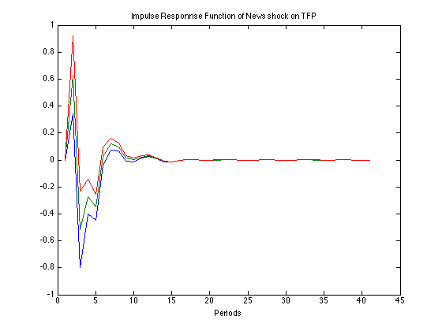
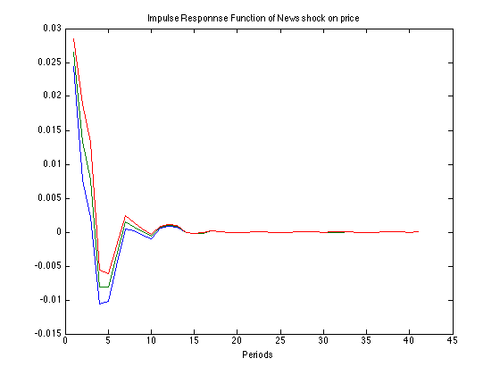
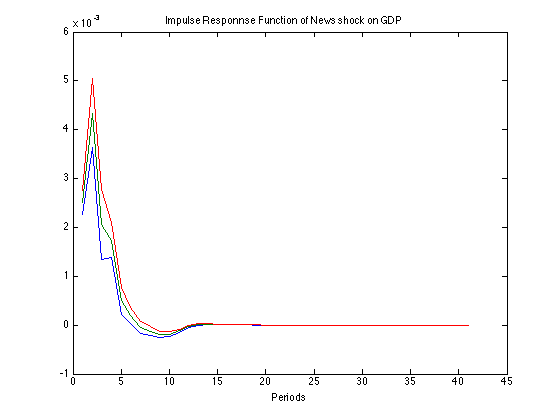
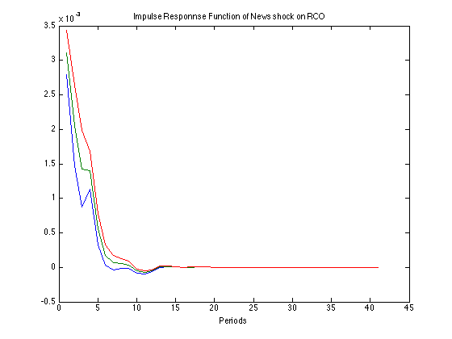

Contents
Macroeconometrics PS3
%Instructions: this problem set aims at replicating some of the results in Beaudry and Portier (AER 2006). You can work in groups of two. I need the .m files you use and a .pdf file reporting the results and a brief explanation of the results. The files must be included in a single .zip file. The name of the file must contain the names of the two students. The file Data.xlsx contains data for many US macroeconomic series. Column CY is the growth rates of TFP (adjusted for capacity utilization) and column CJ is the level of real stock prices (S&P500). clc clear all load Data
Problem 1
%Estimate a VAR(4) for the growth rate of stock prices and the growth rates of TFP. %creating growth variables: %Stock prices obs=length(US500STK); sp=US500STK(4:obs,1); %stock prices tfp=dtfp_util(4:obs,1); %total factor productivity grsp=zeros(length(sp),1); %predeine growth rate of stock prices for i=2:length(sp) grsp(i,1)=log(sp(i)/sp(i-1,1)); end %create the lags of stock prices and TFP SPlags=lagmatrix(grsp,[0 1 2 3 4]); TFPlags=lagmatrix(tfp,[0 1 2 3 4]); %matrixes for VAR(4) obs1=length(TFPlags); Y=[TFPlags(5:obs1,1) SPlags(5:obs1,1)]; cons=ones(length(SPlags)-4,1); X=[cons TFPlags(5:obs1,2) SPlags(5:obs1,2) ... first lag TFPlags(5:obs1,3) SPlags(5:obs1,3) ... second lag TFPlags(5:obs1,4) SPlags(5:obs1,4) ... third lag TFPlags(5:obs1,5) SPlags(5:obs1,5) ]; %fourth lag %phi's phi=inv(X'*X)*X'*Y; %predicted Y's Yhat=X*phi; %residuals ehat=Yhat-Y; %variance-covariance matrix varcov=(ehat'*ehat)/obs1;
Problem 2
%Identify a news shock using the restriction that the shock has no effect contemporaneously on TFP growth. S=chol(varcov,'lower'); %eta=S\ehat'; eta=inv(S)*ehat'; %Gabor: according to the slides phi1=(inv(X'*X)*X'*Y)'; phi1=phi1(:,2:end); [n m]=size(phi1); A=[phi1; eye(m-2) zeros(6,2)]; A=A(1:8,:); h_max=40; impulse_TFP=zeros(h_max+1,1); impulse_SP=zeros(h_max+1,1); impulse_TFP_SP=zeros(h_max+1,1); C_l_o=zeros(2,2); for i=0:h_max a=A^i; D=a(1:2,1:2)*S; %D representation impulse_TFP(i+1,1)=D(1,1); %Shock of TFP on TFP impulse_SP(i+1,1)=D(2,2); %Shock of Stock price on Stock price impulse_TFP_SP(i+1,1)=D(2,1); %Shock of TFP on price end %Find the values for $\sum\limits_{j=0}^\infty C_jS\eta_{t-j}$ %figure(3) %plot(impulse_SP(:,1)); %title('Impulse function of Shock of GDP growth on GDP growth') %xlabel('Periods');
Problem 3
%Plot the impulse response functions of (log) TFP and (log) stock prices (point estimates and the 68% confdence bands computed with the bootstrap method). %form the problem one we have the estimated residuals. h_max=40; %setting the censor A_boo=zeros(2,2,1000,h_max); S2b=zeros(2,2,1000); obs2=length(ehat); for i=1:1000 index=randi(obs2,obs2,1); yhat2=X*phi+ehat(index,:); TFPlags2=lagmatrix(yhat2(1:length(yhat2),1),[0 1 2 3 4]); SPlags2 =lagmatrix(yhat2(1:length(yhat2),2),[0 1 2 3 4]); Y2=[TFPlags2(5:length(yhat2),1) SPlags2(5:length(yhat2),1)]; cons=ones(length(yhat2)-4,1); X2=[cons TFPlags2(5:length(yhat2),2) SPlags2(5:length(yhat2),2) ... first lag TFPlags2(5:length(yhat2),3) SPlags2(5:length(yhat2),3) ... second lag TFPlags2(5:length(yhat2),4) SPlags2(5:length(yhat2),4) ... third lag TFPlags2(5:length(yhat2),5) SPlags2(5:length(yhat2),5) ]; %fourth lag phi2=inv(X2'*X2)*X2'*Y2; Yhat2=X2*phi2; %residuals ehat2=Yhat2-Y2; %Variance Covariance matrix varcov2=(ehat2'*ehat2)/obs2; %Colesky transf of var cov S2=chol(varcov2,'lower'); S2b(:,:,i)=S2; phi2=phi2'; phi2=phi2(:,2:end); [n m]=size(phi2); A=[phi2; eye(m-2) zeros(6,2)]; A=A(1:8,:); for q=0:40 a=A^q; D=a(1:2,1:2)*S2 ; A_boo(:,:,i,q+1)=D; end end %phi's impulse_TFP_boo=zeros(h_max,3); impulse_SP_boo=zeros(h_max,3); impulse_TFP_SP_b=zeros(h_max,3); for i=0:h_max %IRF of TFP shock on TFP impulse_TFP_boo(i+1,2)=impulse_TFP(i+1,1); %point estimate of TFP shock in TFP stdFTP=std(A_boo(1,1,:,i+1)); impulse_TFP_boo(i+1,1)=impulse_TFP(i+1,1)-stdFTP; %left bound of CI at 68% impulse_TFP_boo(i+1,3)=impulse_TFP(i+1,1)+stdFTP; %right bound of CI at 68% %IRF of Price shock on price impulse_SP_boo(i+1,2) =impulse_SP(i+1,1); %point estimate of Price shock in Price stdSP=std(A_boo(2,2,:,i+1)); impulse_SP_boo(i+1,1)=impulse_SP(i+1,1)-stdSP; %left bound of CI at 68% impulse_SP_boo(i+1,3)=impulse_SP(i+1,1)+stdSP; %right bound of CI at 68% %IRF of TFP shock on Prices impulse_TFP_SP_b(i+1,2) =impulse_TFP_SP(i+1,1); %point estimate of Price shock in Price stdTFPSP=std(A_boo(2,1,:,i+1)); impulse_TFP_SP_b(i+1,1)=impulse_TFP_SP(i+1,1)-stdTFPSP; %left bound of CI at 68% impulse_TFP_SP_b(i+1,3)=impulse_TFP_SP(i+1,1)+stdTFPSP; %right bound of CI at 68% end %figure(1) %plot(cumsum(impulse_TFP_boo)); %title('Impulse Responnse Function of TFP shock on TFP') %xlabel('Periods'); %figure(2) %plot(cumsum(impulse_SP_boo)); %title('Impulse Responnse Function of price shock on price') %xlabel('Periods'); %figure(3) %plot(cumsum(impulse_TFP_SP_b)); %title('Impulse Responnse Function of TFP shock on price') %xlabel('Periods');
Problem 4
%Report the percentage of forecast error variance of (log) TFP and (log) stock prices explained at horizon 0, 8 and 40. phi1=(inv(X'*X)*X'*Y)'; phi1=phi1(:,2:end); [n m]=size(phi1); A=[phi1; eye(m-2) zeros(6,2)]; A=A(1:8,:); h_max=40; impulse_TFP=zeros(h_max+1,1); impulse_SP=zeros(h_max+1,1); impulse_TFP_SP=zeros(h_max+1,1); %horizon 0 a=S %TFP shock pred_error_TFP_0=S(1,1)^2/(S(1,1)^2+S(1,2)^2) %price shock pred_error_SP_0=S(2,2)^2/(S(2,1)^2+S(2,2)^2) %horizon 8 T=zeros(2,2,9); for i=0:8 a=A^i; D=a(1:2,1:2)*S; %D representation T(:,:,i+1)=D; end %TFP shock pred_error_TFP_8=sum(T(1,1,:).^2)/sum(T(1,1,:).^2+T(1,2,:).^2) %price shock pred_error_SP_8=sum(T(2,2,:).^2)/sum(T(2,1,:).^2+T(2,2,:).^2) %horizon 40 T=zeros(2,2,41); for i=0:40 a=A^i; D=a(1:2,1:2)*S; %D representation T(:,:,i+1)=D; end %TFP shock pred_error_TFP_40=sum(T(1,1,:).^2)/sum(T(1,1,:).^2+T(1,2,:).^2) %price shock pred_error_SP_40=sum(T(2,2,:).^2)/sum(T(2,1,:).^2+T(2,2,:).^2)
a =
3.1950 0
0.0024 0.0576
pred_error_TFP_0 =
1
pred_error_SP_0 =
0.9983
pred_error_TFP_8 =
0.9468
pred_error_SP_8 =
0.9692
pred_error_TFP_40 =
0.9467
pred_error_SP_40 =
0.9692
Problem 5
Identify a technology shock with the restriction that it is the only one having effect in the long run on (log) TFP. Compute the correlation between the shock identified here and that identified at point 2. Are the results in line with those obtained in Beaudry and Portier (AER 2006)?
%1. Derive H for each repetition of the bootstrap H_b=zeros(2,2,1000); for i=1:1000 C=zeros(2,2); for j=0:40 a=A_boo(:,:,i,j+1); C=C+a; end D=C*S2b(:,:,i); x=fsolve(@(x) D(2,1)*sin(x)+D(2,2)*cos(x), 0); H=[cos(x) sin(x) ; -sin(x) cos(x)]; H_b(:,:,i)=H; end %2. For each repetition, for each t horizon, get the corresponding F F_b=zeros(41,4,1000); a_b=zeros(2,2) ; s_b=zeros(2,2) ; h_b=zeros(2,2) ; for i=1:1000 for j=0:40 a_b(:,:)=A_boo(:,:,i,j+1); s_b(:,:)=S2b(:,:,i); h_b(:,:)=H_b(:,:,i); f_b=a_b*s_b*h_b; F_b(j+1,1,i)=f_b(1,1); %TFP shock on TFP F_b(j+1,2,i)=f_b(1,2); %RSP shock on TFP F_b(j+1,3,i)=f_b(2,1); %TFP shock on RSP F_b(j+1,4,i)=f_b(2,2); %RSP shock on RSP end end %3. For each horizon get the confidence interval MEAN_lr=[]; LB_lr=[]; UP_lr=[]; for j=0:40 M=[]; for i=1:1000 M(i,:)= F_b(j+1,:,i); end MEAN_lr(j+1,:)=mean(M,1); LB_lr(j+1,:)=quantile(M,0.16,1); UB_lr(j+1,:)=quantile(M,1-0.16,1); end %Get the H for the original estimation phi1=(inv(X'*X)*X'*Y)'; phi1=phi1(:,2:end); [n m]=size(phi1); A=[phi1; eye(m-2) zeros(6,2)]; A=A(1:8,:); h_max=40; Cl_o=zeros(2,2); for i=0:h_max a=A^i; Cl_o=Cl_o+a(1:2,1:2); %D representation end Dl_o=Cl_o*S; x=fsolve(@(x) Dl_o(2,1)*sin(x)+Dl_o(2,2)*cos(x), 0); H=[cos(x) sin(x) ; -sin(x) cos(x)]; F=zeros(41,4); for j=0:40 a=A^j; a=a(1:2,1:2); f=a*S*H; F(j+1,1)=f(1,1); %TFP shock on TFP F(j+1,2)=f(1,2); %RSP shock on TFP F(j+1,3)=f(2,1); %TFP shock on RSP F(j+1,4)=f(2,2); %RSP shock on RSP end %Plotting %subplot(2,2,1) %plot(F(1:20,1),'LineWidth',1.5); hold on; %plot(MEAN_lr(1:20,1)); hold on; %plot(UB_lr(1:20,1),'-r'); hold on; %plot(LB_lr(1:20,1),'-r'); %title('TFP on TFP'); %hold off %subplot(2,2,2) %plot(F(1:20,2),'LineWidth',1.5); hold on; %plot(MEAN_lr(1:20,2)); hold on; %plot(UB_lr(1:20,2),'-r'); hold on; %plot(LB_lr(1:20,2),'-r'); %title('RSP on TFP'); %subplot(2,2,3) %plot(F(1:20,3),'LineWidth',1.5); hold on; %plot(MEAN_lr(1:20,3)); hold on; %plot(UB_lr(1:20,3),'-r'); hold on; %plot(LB_lr(1:20,3),'-r'); %title('TFP on RSP'); %subplot(2,2,4) %plot(F(1:20,4),'LineWidth',1.5); hold on; %plot(MEAN_lr(1:20,4)); hold on; %plot(UB_lr(1:20,4),'-r'); hold on; %plot(LB_lr(1:20,4),'-r'); %title('RSP on RSP'); %Correlation between the shocks w_1=(S\ehat')'; w_2=w_1*H; corr=corr(w_1,w_2); %Which is equal to H as Corr(se,Hse)=H
Equation solved. fsolve completed because the vector of function values is near zero as measured by the default value of the function tolerance, and the problem appears regular as measured by the gradient. Equation solved. fsolve completed because the vector of function values is near zero as measured by the default value of the function tolerance, and the problem appears regular as measured by the gradient. Equation solved. fsolve completed because the vector of function values is near zero as measured by the default value of the function tolerance, and the problem appears regular as measured by the gradient. Equation solved. fsolve completed because the vector of function values is near zero as measured by the default value of the function tolerance, and the problem appears regular as measured by the gradient. Equation solved. fsolve completed because the vector of function values is near zero as measured by the default value of the function tolerance, and the problem appears regular as measured by the gradient. Equation solved. fsolve completed because the vector of function values is near zero as measured by the default value of the function tolerance, and the problem appears regular as measured by the gradient. Equation solved. fsolve completed because the vector of function values is near zero as measured by the default value of the function tolerance, and the problem appears regular as measured by the gradient. Equation solved. fsolve completed because the vector of function values is near zero as measured by the default value of the function tolerance, and the problem appears regular as measured by the gradient. Equation solved. fsolve completed because the vector of function values is near zero as measured by the default value of the function tolerance, and the problem appears regular as measured by the gradient. Equation solved. fsolve completed because the vector of function values is near zero as measured by the default value of the function tolerance, and the problem appears regular as measured by the gradient. Equation solved. fsolve completed because the vector of function values is near zero as measured by the default value of the function tolerance, and the problem appears regular as measured by the gradient. Equation solved. fsolve completed because the vector of function values is near zero as measured by the default value of the function tolerance, and the problem appears regular as measured by the gradient. Equation solved. fsolve completed because the vector of function values is near zero as measured by the default value of the function tolerance, and the problem appears regular as measured by the gradient. Equation solved. fsolve completed because the vector of function values is near zero as measured by the default value of the function tolerance, and the problem appears regular as measured by the gradient. Equation solved. fsolve completed because the vector of function values is near zero as measured by the default value of the function tolerance, and the problem appears regular as measured by the gradient. Equation solved. fsolve completed because the vector of function values is near zero as measured by the default value of the function tolerance, and the problem appears regular as measured by the gradient. Equation solved. fsolve completed because the vector of function values is near zero as measured by the default value of the function tolerance, and the problem appears regular as measured by the gradient. Equation solved. fsolve completed because the vector of function values is near zero as measured by the default value of the function tolerance, and the problem appears regular as measured by the gradient. Equation solved. fsolve completed because the vector of function values is near zero as measured by the default value of the function tolerance, and the problem appears regular as measured by the gradient. Equation solved. fsolve completed because the vector of function values is near zero as measured by the default value of the function tolerance, and the problem appears regular as measured by the gradient. Equation solved. fsolve completed because the vector of function values is near zero as measured by the default value of the function tolerance, and the problem appears regular as measured by the gradient. Equation solved. fsolve completed because the vector of function values is near zero as measured by the default value of the function tolerance, and the problem appears regular as measured by the gradient. Equation solved. fsolve completed because the vector of function values is near zero as measured by the default value of the function tolerance, and the problem appears regular as measured by the gradient. Equation solved. fsolve completed because the vector of function values is near zero as measured by the default value of the function tolerance, and the problem appears regular as measured by the gradient. Equation solved. fsolve completed because the vector of function values is near zero as measured by the default value of the function tolerance, and the problem appears regular as measured by the gradient. Equation solved. fsolve completed because the vector of function values is near zero as measured by the default value of the function tolerance, and the problem appears regular as measured by the gradient. Equation solved. fsolve completed because the vector of function values is near zero as measured by the default value of the function tolerance, and the problem appears regular as measured by the gradient. Equation solved. fsolve completed because the vector of function values is near zero as measured by the default value of the function tolerance, and the problem appears regular as measured by the gradient. Equation solved. fsolve completed because the vector of function values is near zero as measured by the default value of the function tolerance, and the problem appears regular as measured by the gradient. Equation solved. fsolve completed because the vector of function values is near zero as measured by the default value of the function tolerance, and the problem appears regular as measured by the gradient. Equation solved. fsolve completed because the vector of function values is near zero as measured by the default value of the function tolerance, and the problem appears regular as measured by the gradient. Equation solved. fsolve completed because the vector of function values is near zero as measured by the default value of the function tolerance, and the problem appears regular as measured by the gradient. Equation solved. fsolve completed because the vector of function values is near zero as measured by the default value of the function tolerance, and the problem appears regular as measured by the gradient. Equation solved. fsolve completed because the vector of function values is near zero as measured by the default value of the function tolerance, and the problem appears regular as measured by the gradient. Equation solved. fsolve completed because the vector of function values is near zero as measured by the default value of the function tolerance, and the problem appears regular as measured by the gradient. Equation solved. fsolve completed because the vector of function values is near zero as measured by the default value of the function tolerance, and the problem appears regular as measured by the gradient. Equation solved. fsolve completed because the vector of function values is near zero as measured by the default value of the function tolerance, and the problem appears regular as measured by the gradient. Equation solved. fsolve completed because the vector of function values is near zero as measured by the default value of the function tolerance, and the problem appears regular as measured by the gradient. Equation solved. fsolve completed because the vector of function values is near zero as measured by the default value of the function tolerance, and the problem appears regular as measured by the gradient. Equation solved. fsolve completed because the vector of function values is near zero as measured by the default value of the function tolerance, and the problem appears regular as measured by the gradient. Equation solved. fsolve completed because the vector of function values is near zero as measured by the default value of the function tolerance, and the problem appears regular as measured by the gradient. Equation solved. fsolve completed because the vector of function values is near zero as measured by the default value of the function tolerance, and the problem appears regular as measured by the gradient. Equation solved. fsolve completed because the vector of function values is near zero as measured by the default value of the function tolerance, and the problem appears regular as measured by the gradient. Equation solved. fsolve completed because the vector of function values is near zero as measured by the default value of the function tolerance, and the problem appears regular as measured by the gradient. Equation solved. fsolve completed because the vector of function values is near zero as measured by the default value of the function tolerance, and the problem appears regular as measured by the gradient. Equation solved. fsolve completed because the vector of function values is near zero as measured by the default value of the function tolerance, and the problem appears regular as measured by the gradient. Equation solved. fsolve completed because the vector of function values is near zero as measured by the default value of the function tolerance, and the problem appears regular as measured by the gradient. Equation solved. fsolve completed because the vector of function values is near zero as measured by the default value of the function tolerance, and the problem appears regular as measured by the gradient. Equation solved. fsolve completed because the vector of function values is near zero as measured by the default value of the function tolerance, and the problem appears regular as measured by the gradient. Equation solved. fsolve completed because the vector of function values is near zero as measured by the default value of the function tolerance, and the problem appears regular as measured by the gradient. Equation solved. fsolve completed because the vector of function values is near zero as measured by the default value of the function tolerance, and the problem appears regular as measured by the gradient. Equation solved. fsolve completed because the vector of function values is near zero as measured by the default value of the function tolerance, and the problem appears regular as measured by the gradient. Equation solved. fsolve completed because the vector of function values is near zero as measured by the default value of the function tolerance, and the problem appears regular as measured by the gradient. Equation solved. fsolve completed because the vector of function values is near zero as measured by the default value of the function tolerance, and the problem appears regular as measured by the gradient. Equation solved. fsolve completed because the vector of function values is near zero as measured by the default value of the function tolerance, and the problem appears regular as measured by the gradient. Equation solved. fsolve completed because the vector of function values is near zero as measured by the default value of the function tolerance, and the problem appears regular as measured by the gradient. Equation solved. fsolve completed because the vector of function values is near zero as measured by the default value of the function tolerance, and the problem appears regular as measured by the gradient. Equation solved. fsolve completed because the vector of function values is near zero as measured by the default value of the function tolerance, and the problem appears regular as measured by the gradient. Equation solved. fsolve completed because the vector of function values is near zero as measured by the default value of the function tolerance, and the problem appears regular as measured by the gradient. Equation solved. fsolve completed because the vector of function values is near zero as measured by the default value of the function tolerance, and the problem appears regular as measured by the gradient. Equation solved. fsolve completed because the vector of function values is near zero as measured by the default value of the function tolerance, and the problem appears regular as measured by the gradient. Equation solved. fsolve completed because the vector of function values is near zero as measured by the default value of the function tolerance, and the problem appears regular as measured by the gradient. Equation solved. fsolve completed because the vector of function values is near zero as measured by the default value of the function tolerance, and the problem appears regular as measured by the gradient. Equation solved. fsolve completed because the vector of function values is near zero as measured by the default value of the function tolerance, and the problem appears regular as measured by the gradient. Equation solved. fsolve completed because the vector of function values is near zero as measured by the default value of the function tolerance, and the problem appears regular as measured by the gradient. Equation solved. fsolve completed because the vector of function values is near zero as measured by the default value of the function tolerance, and the problem appears regular as measured by the gradient. Equation solved. fsolve completed because the vector of function values is near zero as measured by the default value of the function tolerance, and the problem appears regular as measured by the gradient. Equation solved. fsolve completed because the vector of function values is near zero as measured by the default value of the function tolerance, and the problem appears regular as measured by the gradient. Equation solved. fsolve completed because the vector of function values is near zero as measured by the default value of the function tolerance, and the problem appears regular as measured by the gradient. Equation solved. fsolve completed because the vector of function values is near zero as measured by the default value of the function tolerance, and the problem appears regular as measured by the gradient. Equation solved. fsolve completed because the vector of function values is near zero as measured by the default value of the function tolerance, and the problem appears regular as measured by the gradient. Equation solved. fsolve completed because the vector of function values is near zero as measured by the default value of the function tolerance, and the problem appears regular as measured by the gradient. Equation solved. fsolve completed because the vector of function values is near zero as measured by the default value of the function tolerance, and the problem appears regular as measured by the gradient. Equation solved. fsolve completed because the vector of function values is near zero as measured by the default value of the function tolerance, and the problem appears regular as measured by the gradient. Equation solved. fsolve completed because the vector of function values is near zero as measured by the default value of the function tolerance, and the problem appears regular as measured by the gradient. Equation solved. fsolve completed because the vector of function values is near zero as measured by the default value of the function tolerance, and the problem appears regular as measured by the gradient. Equation solved. fsolve completed because the vector of function values is near zero as measured by the default value of the function tolerance, and the problem appears regular as measured by the gradient. Equation solved. fsolve completed because the vector of function values is near zero as measured by the default value of the function tolerance, and the problem appears regular as measured by the gradient. Equation solved. fsolve completed because the vector of function values is near zero as measured by the default value of the function tolerance, and the problem appears regular as measured by the gradient. Equation solved. fsolve completed because the vector of function values is near zero as measured by the default value of the function tolerance, and the problem appears regular as measured by the gradient. Equation solved. fsolve completed because the vector of function values is near zero as measured by the default value of the function tolerance, and the problem appears regular as measured by the gradient. Equation solved. fsolve completed because the vector of function values is near zero as measured by the default value of the function tolerance, and the problem appears regular as measured by the gradient. Equation solved. fsolve completed because the vector of function values is near zero as measured by the default value of the function tolerance, and the problem appears regular as measured by the gradient. Equation solved. fsolve completed because the vector of function values is near zero as measured by the default value of the function tolerance, and the problem appears regular as measured by the gradient. Equation solved. fsolve completed because the vector of function values is near zero as measured by the default value of the function tolerance, and the problem appears regular as measured by the gradient. Equation solved. fsolve completed because the vector of function values is near zero as measured by the default value of the function tolerance, and the problem appears regular as measured by the gradient. Equation solved. fsolve completed because the vector of function values is near zero as measured by the default value of the function tolerance, and the problem appears regular as measured by the gradient. Equation solved. fsolve completed because the vector of function values is near zero as measured by the default value of the function tolerance, and the problem appears regular as measured by the gradient. Equation solved. fsolve completed because the vector of function values is near zero as measured by the default value of the function tolerance, and the problem appears regular as measured by the gradient. Equation solved. fsolve completed because the vector of function values is near zero as measured by the default value of the function tolerance, and the problem appears regular as measured by the gradient. Equation solved. fsolve completed because the vector of function values is near zero as measured by the default value of the function tolerance, and the problem appears regular as measured by the gradient. Equation solved. fsolve completed because the vector of function values is near zero as measured by the default value of the function tolerance, and the problem appears regular as measured by the gradient. Equation solved. fsolve completed because the vector of function values is near zero as measured by the default value of the function tolerance, and the problem appears regular as measured by the gradient. Equation solved. fsolve completed because the vector of function values is near zero as measured by the default value of the function tolerance, and the problem appears regular as measured by the gradient. Equation solved. fsolve completed because the vector of function values is near zero as measured by the default value of the function tolerance, and the problem appears regular as measured by the gradient. Equation solved. fsolve completed because the vector of function values is near zero as measured by the default value of the function tolerance, and the problem appears regular as measured by the gradient. Equation solved. fsolve completed because the vector of function values is near zero as measured by the default value of the function tolerance, and the problem appears regular as measured by the gradient. Equation solved. fsolve completed because the vector of function values is near zero as measured by the default value of the function tolerance, and the problem appears regular as measured by the gradient. Equation solved. fsolve completed because the vector of function values is near zero as measured by the default value of the function tolerance, and the problem appears regular as measured by the gradient. Equation solved. fsolve completed because the vector of function values is near zero as measured by the default value of the function tolerance, and the problem appears regular as measured by the gradient. Equation solved. fsolve completed because the vector of function values is near zero as measured by the default value of the function tolerance, and the problem appears regular as measured by the gradient. Equation solved. fsolve completed because the vector of function values is near zero as measured by the default value of the function tolerance, and the problem appears regular as measured by the gradient. Equation solved. fsolve completed because the vector of function values is near zero as measured by the default value of the function tolerance, and the problem appears regular as measured by the gradient. Equation solved. fsolve completed because the vector of function values is near zero as measured by the default value of the function tolerance, and the problem appears regular as measured by the gradient. Equation solved. fsolve completed because the vector of function values is near zero as measured by the default value of the function tolerance, and the problem appears regular as measured by the gradient. Equation solved. fsolve completed because the vector of function values is near zero as measured by the default value of the function tolerance, and the problem appears regular as measured by the gradient. Equation solved. fsolve completed because the vector of function values is near zero as measured by the default value of the function tolerance, and the problem appears regular as measured by the gradient. Equation solved. fsolve completed because the vector of function values is near zero as measured by the default value of the function tolerance, and the problem appears regular as measured by the gradient. Equation solved. fsolve completed because the vector of function values is near zero as measured by the default value of the function tolerance, and the problem appears regular as measured by the gradient. Equation solved. fsolve completed because the vector of function values is near zero as measured by the default value of the function tolerance, and the problem appears regular as measured by the gradient. Equation solved. fsolve completed because the vector of function values is near zero as measured by the default value of the function tolerance, and the problem appears regular as measured by the gradient. Equation solved. fsolve completed because the vector of function values is near zero as measured by the default value of the function tolerance, and the problem appears regular as measured by the gradient. Equation solved. fsolve completed because the vector of function values is near zero as measured by the default value of the function tolerance, and the problem appears regular as measured by the gradient. Equation solved. fsolve completed because the vector of function values is near zero as measured by the default value of the function tolerance, and the problem appears regular as measured by the gradient. Equation solved. fsolve completed because the vector of function values is near zero as measured by the default value of the function tolerance, and the problem appears regular as measured by the gradient. Equation solved. fsolve completed because the vector of function values is near zero as measured by the default value of the function tolerance, and the problem appears regular as measured by the gradient. Equation solved. fsolve completed because the vector of function values is near zero as measured by the default value of the function tolerance, and the problem appears regular as measured by the gradient. Equation solved. fsolve completed because the vector of function values is near zero as measured by the default value of the function tolerance, and the problem appears regular as measured by the gradient. Equation solved. fsolve completed because the vector of function values is near zero as measured by the default value of the function tolerance, and the problem appears regular as measured by the gradient. Equation solved. fsolve completed because the vector of function values is near zero as measured by the default value of the function tolerance, and the problem appears regular as measured by the gradient. Equation solved. fsolve completed because the vector of function values is near zero as measured by the default value of the function tolerance, and the problem appears regular as measured by the gradient. Equation solved. fsolve completed because the vector of function values is near zero as measured by the default value of the function tolerance, and the problem appears regular as measured by the gradient. Equation solved. fsolve completed because the vector of function values is near zero as measured by the default value of the function tolerance, and the problem appears regular as measured by the gradient. Equation solved. fsolve completed because the vector of function values is near zero as measured by the default value of the function tolerance, and the problem appears regular as measured by the gradient. Equation solved. fsolve completed because the vector of function values is near zero as measured by the default value of the function tolerance, and the problem appears regular as measured by the gradient. Equation solved. fsolve completed because the vector of function values is near zero as measured by the default value of the function tolerance, and the problem appears regular as measured by the gradient. Equation solved. fsolve completed because the vector of function values is near zero as measured by the default value of the function tolerance, and the problem appears regular as measured by the gradient. Equation solved. fsolve completed because the vector of function values is near zero as measured by the default value of the function tolerance, and the problem appears regular as measured by the gradient. Equation solved. fsolve completed because the vector of function values is near zero as measured by the default value of the function tolerance, and the problem appears regular as measured by the gradient. Equation solved. fsolve completed because the vector of function values is near zero as measured by the default value of the function tolerance, and the problem appears regular as measured by the gradient. Equation solved. fsolve completed because the vector of function values is near zero as measured by the default value of the function tolerance, and the problem appears regular as measured by the gradient. Equation solved. fsolve completed because the vector of function values is near zero as measured by the default value of the function tolerance, and the problem appears regular as measured by the gradient. Equation solved. fsolve completed because the vector of function values is near zero as measured by the default value of the function tolerance, and the problem appears regular as measured by the gradient. Equation solved. fsolve completed because the vector of function values is near zero as measured by the default value of the function tolerance, and the problem appears regular as measured by the gradient. Equation solved. fsolve completed because the vector of function values is near zero as measured by the default value of the function tolerance, and the problem appears regular as measured by the gradient. Equation solved. fsolve completed because the vector of function values is near zero as measured by the default value of the function tolerance, and the problem appears regular as measured by the gradient. Equation solved. fsolve completed because the vector of function values is near zero as measured by the default value of the function tolerance, and the problem appears regular as measured by the gradient. Equation solved. fsolve completed because the vector of function values is near zero as measured by the default value of the function tolerance, and the problem appears regular as measured by the gradient. Equation solved. fsolve completed because the vector of function values is near zero as measured by the default value of the function tolerance, and the problem appears regular as measured by the gradient. Equation solved at initial point. fsolve completed because the vector of function values at the initial point is near zero as measured by the default value of the function tolerance, and the problem appears regular as measured by the gradient. Equation solved. fsolve completed because the vector of function values is near zero as measured by the default value of the function tolerance, and the problem appears regular as measured by the gradient. Equation solved. fsolve completed because the vector of function values is near zero as measured by the default value of the function tolerance, and the problem appears regular as measured by the gradient. Equation solved. fsolve completed because the vector of function values is near zero as measured by the default value of the function tolerance, and the problem appears regular as measured by the gradient. Equation solved. fsolve completed because the vector of function values is near zero as measured by the default value of the function tolerance, and the problem appears regular as measured by the gradient. Equation solved. fsolve completed because the vector of function values is near zero as measured by the default value of the function tolerance, and the problem appears regular as measured by the gradient. Equation solved. fsolve completed because the vector of function values is near zero as measured by the default value of the function tolerance, and the problem appears regular as measured by the gradient. Equation solved. fsolve completed because the vector of function values is near zero as measured by the default value of the function tolerance, and the problem appears regular as measured by the gradient. Equation solved. fsolve completed because the vector of function values is near zero as measured by the default value of the function tolerance, and the problem appears regular as measured by the gradient. Equation solved. fsolve completed because the vector of function values is near zero as measured by the default value of the function tolerance, and the problem appears regular as measured by the gradient. Equation solved. fsolve completed because the vector of function values is near zero as measured by the default value of the function tolerance, and the problem appears regular as measured by the gradient. Equation solved. fsolve completed because the vector of function values is near zero as measured by the default value of the function tolerance, and the problem appears regular as measured by the gradient. Equation solved. fsolve completed because the vector of function values is near zero as measured by the default value of the function tolerance, and the problem appears regular as measured by the gradient. Equation solved. fsolve completed because the vector of function values is near zero as measured by the default value of the function tolerance, and the problem appears regular as measured by the gradient. Equation solved. fsolve completed because the vector of function values is near zero as measured by the default value of the function tolerance, and the problem appears regular as measured by the gradient. Equation solved. fsolve completed because the vector of function values is near zero as measured by the default value of the function tolerance, and the problem appears regular as measured by the gradient. Equation solved. fsolve completed because the vector of function values is near zero as measured by the default value of the function tolerance, and the problem appears regular as measured by the gradient. Equation solved. fsolve completed because the vector of function values is near zero as measured by the default value of the function tolerance, and the problem appears regular as measured by the gradient. Equation solved. fsolve completed because the vector of function values is near zero as measured by the default value of the function tolerance, and the problem appears regular as measured by the gradient. Equation solved. fsolve completed because the vector of function values is near zero as measured by the default value of the function tolerance, and the problem appears regular as measured by the gradient. Equation solved. fsolve completed because the vector of function values is near zero as measured by the default value of the function tolerance, and the problem appears regular as measured by the gradient. Equation solved. fsolve completed because the vector of function values is near zero as measured by the default value of the function tolerance, and the problem appears regular as measured by the gradient. Equation solved. fsolve completed because the vector of function values is near zero as measured by the default value of the function tolerance, and the problem appears regular as measured by the gradient. Equation solved. fsolve completed because the vector of function values is near zero as measured by the default value of the function tolerance, and the problem appears regular as measured by the gradient. Equation solved. fsolve completed because the vector of function values is near zero as measured by the default value of the function tolerance, and the problem appears regular as measured by the gradient. Equation solved. fsolve completed because the vector of function values is near zero as measured by the default value of the function tolerance, and the problem appears regular as measured by the gradient. Equation solved. fsolve completed because the vector of function values is near zero as measured by the default value of the function tolerance, and the problem appears regular as measured by the gradient. Equation solved. fsolve completed because the vector of function values is near zero as measured by the default value of the function tolerance, and the problem appears regular as measured by the gradient. Equation solved. fsolve completed because the vector of function values is near zero as measured by the default value of the function tolerance, and the problem appears regular as measured by the gradient. Equation solved. fsolve completed because the vector of function values is near zero as measured by the default value of the function tolerance, and the problem appears regular as measured by the gradient. Equation solved. fsolve completed because the vector of function values is near zero as measured by the default value of the function tolerance, and the problem appears regular as measured by the gradient. Equation solved. fsolve completed because the vector of function values is near zero as measured by the default value of the function tolerance, and the problem appears regular as measured by the gradient. Equation solved. fsolve completed because the vector of function values is near zero as measured by the default value of the function tolerance, and the problem appears regular as measured by the gradient. Equation solved. fsolve completed because the vector of function values is near zero as measured by the default value of the function tolerance, and the problem appears regular as measured by the gradient. Equation solved. fsolve completed because the vector of function values is near zero as measured by the default value of the function tolerance, and the problem appears regular as measured by the gradient. Equation solved. fsolve completed because the vector of function values is near zero as measured by the default value of the function tolerance, and the problem appears regular as measured by the gradient. Equation solved. fsolve completed because the vector of function values is near zero as measured by the default value of the function tolerance, and the problem appears regular as measured by the gradient. Equation solved. fsolve completed because the vector of function values is near zero as measured by the default value of the function tolerance, and the problem appears regular as measured by the gradient. Equation solved. fsolve completed because the vector of function values is near zero as measured by the default value of the function tolerance, and the problem appears regular as measured by the gradient. Equation solved. fsolve completed because the vector of function values is near zero as measured by the default value of the function tolerance, and the problem appears regular as measured by the gradient. Equation solved. fsolve completed because the vector of function values is near zero as measured by the default value of the function tolerance, and the problem appears regular as measured by the gradient. Equation solved. fsolve completed because the vector of function values is near zero as measured by the default value of the function tolerance, and the problem appears regular as measured by the gradient. Equation solved. fsolve completed because the vector of function values is near zero as measured by the default value of the function tolerance, and the problem appears regular as measured by the gradient. Equation solved. fsolve completed because the vector of function values is near zero as measured by the default value of the function tolerance, and the problem appears regular as measured by the gradient. Equation solved. fsolve completed because the vector of function values is near zero as measured by the default value of the function tolerance, and the problem appears regular as measured by the gradient. Equation solved. fsolve completed because the vector of function values is near zero as measured by the default value of the function tolerance, and the problem appears regular as measured by the gradient. Equation solved. fsolve completed because the vector of function values is near zero as measured by the default value of the function tolerance, and the problem appears regular as measured by the gradient. Equation solved. fsolve completed because the vector of function values is near zero as measured by the default value of the function tolerance, and the problem appears regular as measured by the gradient. Equation solved. fsolve completed because the vector of function values is near zero as measured by the default value of the function tolerance, and the problem appears regular as measured by the gradient. Equation solved at initial point. fsolve completed because the vector of function values at the initial point is near zero as measured by the default value of the function tolerance, and the problem appears regular as measured by the gradient. Equation solved. fsolve completed because the vector of function values is near zero as measured by the default value of the function tolerance, and the problem appears regular as measured by the gradient. Equation solved. fsolve completed because the vector of function values is near zero as measured by the default value of the function tolerance, and the problem appears regular as measured by the gradient. Equation solved. fsolve completed because the vector of function values is near zero as measured by the default value of the function tolerance, and the problem appears regular as measured by the gradient. Equation solved. fsolve completed because the vector of function values is near zero as measured by the default value of the function tolerance, and the problem appears regular as measured by the gradient. Equation solved. fsolve completed because the vector of function values is near zero as measured by the default value of the function tolerance, and the problem appears regular as measured by the gradient. Equation solved. fsolve completed because the vector of function values is near zero as measured by the default value of the function tolerance, and the problem appears regular as measured by the gradient. Equation solved. fsolve completed because the vector of function values is near zero as measured by the default value of the function tolerance, and the problem appears regular as measured by the gradient. Equation solved. fsolve completed because the vector of function values is near zero as measured by the default value of the function tolerance, and the problem appears regular as measured by the gradient. Equation solved. fsolve completed because the vector of function values is near zero as measured by the default value of the function tolerance, and the problem appears regular as measured by the gradient. Equation solved. fsolve completed because the vector of function values is near zero as measured by the default value of the function tolerance, and the problem appears regular as measured by the gradient. Equation solved. fsolve completed because the vector of function values is near zero as measured by the default value of the function tolerance, and the problem appears regular as measured by the gradient. Equation solved. fsolve completed because the vector of function values is near zero as measured by the default value of the function tolerance, and the problem appears regular as measured by the gradient. Equation solved. fsolve completed because the vector of function values is near zero as measured by the default value of the function tolerance, and the problem appears regular as measured by the gradient. Equation solved. fsolve completed because the vector of function values is near zero as measured by the default value of the function tolerance, and the problem appears regular as measured by the gradient. Equation solved. fsolve completed because the vector of function values is near zero as measured by the default value of the function tolerance, and the problem appears regular as measured by the gradient. Equation solved. fsolve completed because the vector of function values is near zero as measured by the default value of the function tolerance, and the problem appears regular as measured by the gradient. Equation solved. fsolve completed because the vector of function values is near zero as measured by the default value of the function tolerance, and the problem appears regular as measured by the gradient. Equation solved. fsolve completed because the vector of function values is near zero as measured by the default value of the function tolerance, and the problem appears regular as measured by the gradient. Equation solved. fsolve completed because the vector of function values is near zero as measured by the default value of the function tolerance, and the problem appears regular as measured by the gradient. Equation solved. fsolve completed because the vector of function values is near zero as measured by the default value of the function tolerance, and the problem appears regular as measured by the gradient. Equation solved. fsolve completed because the vector of function values is near zero as measured by the default value of the function tolerance, and the problem appears regular as measured by the gradient. Equation solved. fsolve completed because the vector of function values is near zero as measured by the default value of the function tolerance, and the problem appears regular as measured by the gradient. Equation solved. fsolve completed because the vector of function values is near zero as measured by the default value of the function tolerance, and the problem appears regular as measured by the gradient. Equation solved. fsolve completed because the vector of function values is near zero as measured by the default value of the function tolerance, and the problem appears regular as measured by the gradient. Equation solved. fsolve completed because the vector of function values is near zero as measured by the default value of the function tolerance, and the problem appears regular as measured by the gradient. Equation solved. fsolve completed because the vector of function values is near zero as measured by the default value of the function tolerance, and the problem appears regular as measured by the gradient. Equation solved. fsolve completed because the vector of function values is near zero as measured by the default value of the function tolerance, and the problem appears regular as measured by the gradient. Equation solved. fsolve completed because the vector of function values is near zero as measured by the default value of the function tolerance, and the problem appears regular as measured by the gradient. Equation solved. fsolve completed because the vector of function values is near zero as measured by the default value of the function tolerance, and the problem appears regular as measured by the gradient. Equation solved. fsolve completed because the vector of function values is near zero as measured by the default value of the function tolerance, and the problem appears regular as measured by the gradient. Equation solved. fsolve completed because the vector of function values is near zero as measured by the default value of the function tolerance, and the problem appears regular as measured by the gradient. Equation solved. fsolve completed because the vector of function values is near zero as measured by the default value of the function tolerance, and the problem appears regular as measured by the gradient. Equation solved. fsolve completed because the vector of function values is near zero as measured by the default value of the function tolerance, and the problem appears regular as measured by the gradient. Equation solved. fsolve completed because the vector of function values is near zero as measured by the default value of the function tolerance, and the problem appears regular as measured by the gradient. Equation solved. fsolve completed because the vector of function values is near zero as measured by the default value of the function tolerance, and the problem appears regular as measured by the gradient. Equation solved. fsolve completed because the vector of function values is near zero as measured by the default value of the function tolerance, and the problem appears regular as measured by the gradient. Equation solved. fsolve completed because the vector of function values is near zero as measured by the default value of the function tolerance, and the problem appears regular as measured by the gradient. Equation solved. fsolve completed because the vector of function values is near zero as measured by the default value of the function tolerance, and the problem appears regular as measured by the gradient. Equation solved. fsolve completed because the vector of function values is near zero as measured by the default value of the function tolerance, and the problem appears regular as measured by the gradient. Equation solved. fsolve completed because the vector of function values is near zero as measured by the default value of the function tolerance, and the problem appears regular as measured by the gradient. Equation solved. fsolve completed because the vector of function values is near zero as measured by the default value of the function tolerance, and the problem appears regular as measured by the gradient. Equation solved. fsolve completed because the vector of function values is near zero as measured by the default value of the function tolerance, and the problem appears regular as measured by the gradient. Equation solved. fsolve completed because the vector of function values is near zero as measured by the default value of the function tolerance, and the problem appears regular as measured by the gradient. Equation solved. fsolve completed because the vector of function values is near zero as measured by the default value of the function tolerance, and the problem appears regular as measured by the gradient. Equation solved. fsolve completed because the vector of function values is near zero as measured by the default value of the function tolerance, and the problem appears regular as measured by the gradient. Equation solved. fsolve completed because the vector of function values is near zero as measured by the default value of the function tolerance, and the problem appears regular as measured by the gradient. Equation solved. fsolve completed because the vector of function values is near zero as measured by the default value of the function tolerance, and the problem appears regular as measured by the gradient. Equation solved. fsolve completed because the vector of function values is near zero as measured by the default value of the function tolerance, and the problem appears regular as measured by the gradient. Equation solved. fsolve completed because the vector of function values is near zero as measured by the default value of the function tolerance, and the problem appears regular as measured by the gradient. Equation solved. fsolve completed because the vector of function values is near zero as measured by the default value of the function tolerance, and the problem appears regular as measured by the gradient. Equation solved. fsolve completed because the vector of function values is near zero as measured by the default value of the function tolerance, and the problem appears regular as measured by the gradient. Equation solved. fsolve completed because the vector of function values is near zero as measured by the default value of the function tolerance, and the problem appears regular as measured by the gradient. Equation solved. fsolve completed because the vector of function values is near zero as measured by the default value of the function tolerance, and the problem appears regular as measured by the gradient. Equation solved. fsolve completed because the vector of function values is near zero as measured by the default value of the function tolerance, and the problem appears regular as measured by the gradient. Equation solved. fsolve completed because the vector of function values is near zero as measured by the default value of the function tolerance, and the problem appears regular as measured by the gradient. Equation solved. fsolve completed because the vector of function values is near zero as measured by the default value of the function tolerance, and the problem appears regular as measured by the gradient. Equation solved. fsolve completed because the vector of function values is near zero as measured by the default value of the function tolerance, and the problem appears regular as measured by the gradient. Equation solved. fsolve completed because the vector of function values is near zero as measured by the default value of the function tolerance, and the problem appears regular as measured by the gradient. Equation solved. fsolve completed because the vector of function values is near zero as measured by the default value of the function tolerance, and the problem appears regular as measured by the gradient. Equation solved. fsolve completed because the vector of function values is near zero as measured by the default value of the function tolerance, and the problem appears regular as measured by the gradient. Equation solved. fsolve completed because the vector of function values is near zero as measured by the default value of the function tolerance, and the problem appears regular as measured by the gradient. Equation solved. fsolve completed because the vector of function values is near zero as measured by the default value of the function tolerance, and the problem appears regular as measured by the gradient. Equation solved. fsolve completed because the vector of function values is near zero as measured by the default value of the function tolerance, and the problem appears regular as measured by the gradient. Equation solved. fsolve completed because the vector of function values is near zero as measured by the default value of the function tolerance, and the problem appears regular as measured by the gradient. Equation solved. fsolve completed because the vector of function values is near zero as measured by the default value of the function tolerance, and the problem appears regular as measured by the gradient. Equation solved. fsolve completed because the vector of function values is near zero as measured by the default value of the function tolerance, and the problem appears regular as measured by the gradient. Equation solved. fsolve completed because the vector of function values is near zero as measured by the default value of the function tolerance, and the problem appears regular as measured by the gradient. Equation solved. fsolve completed because the vector of function values is near zero as measured by the default value of the function tolerance, and the problem appears regular as measured by the gradient. Equation solved. fsolve completed because the vector of function values is near zero as measured by the default value of the function tolerance, and the problem appears regular as measured by the gradient. Equation solved. fsolve completed because the vector of function values is near zero as measured by the default value of the function tolerance, and the problem appears regular as measured by the gradient. Equation solved. fsolve completed because the vector of function values is near zero as measured by the default value of the function tolerance, and the problem appears regular as measured by the gradient. Equation solved. fsolve completed because the vector of function values is near zero as measured by the default value of the function tolerance, and the problem appears regular as measured by the gradient. Equation solved. fsolve completed because the vector of function values is near zero as measured by the default value of the function tolerance, and the problem appears regular as measured by the gradient. Equation solved. fsolve completed because the vector of function values is near zero as measured by the default value of the function tolerance, and the problem appears regular as measured by the gradient. Equation solved at initial point. fsolve completed because the vector of function values at the initial point is near zero as measured by the default value of the function tolerance, and the problem appears regular as measured by the gradient. Equation solved. fsolve completed because the vector of function values is near zero as measured by the default value of the function tolerance, and the problem appears regular as measured by the gradient. Equation solved. fsolve completed because the vector of function values is near zero as measured by the default value of the function tolerance, and the problem appears regular as measured by the gradient. Equation solved. fsolve completed because the vector of function values is near zero as measured by the default value of the function tolerance, and the problem appears regular as measured by the gradient. Equation solved. fsolve completed because the vector of function values is near zero as measured by the default value of the function tolerance, and the problem appears regular as measured by the gradient. Equation solved. fsolve completed because the vector of function values is near zero as measured by the default value of the function tolerance, and the problem appears regular as measured by the gradient. Equation solved. fsolve completed because the vector of function values is near zero as measured by the default value of the function tolerance, and the problem appears regular as measured by the gradient. Equation solved. fsolve completed because the vector of function values is near zero as measured by the default value of the function tolerance, and the problem appears regular as measured by the gradient. Equation solved. fsolve completed because the vector of function values is near zero as measured by the default value of the function tolerance, and the problem appears regular as measured by the gradient. Equation solved. fsolve completed because the vector of function values is near zero as measured by the default value of the function tolerance, and the problem appears regular as measured by the gradient. Equation solved. fsolve completed because the vector of function values is near zero as measured by the default value of the function tolerance, and the problem appears regular as measured by the gradient. Equation solved. fsolve completed because the vector of function values is near zero as measured by the default value of the function tolerance, and the problem appears regular as measured by the gradient. Equation solved. fsolve completed because the vector of function values is near zero as measured by the default value of the function tolerance, and the problem appears regular as measured by the gradient. Equation solved. fsolve completed because the vector of function values is near zero as measured by the default value of the function tolerance, and the problem appears regular as measured by the gradient. Equation solved. fsolve completed because the vector of function values is near zero as measured by the default value of the function tolerance, and the problem appears regular as measured by the gradient. Equation solved at initial point. fsolve completed because the vector of function values at the initial point is near zero as measured by the default value of the function tolerance, and the problem appears regular as measured by the gradient. Equation solved. fsolve completed because the vector of function values is near zero as measured by the default value of the function tolerance, and the problem appears regular as measured by the gradient. Equation solved. fsolve completed because the vector of function values is near zero as measured by the default value of the function tolerance, and the problem appears regular as measured by the gradient. Equation solved. fsolve completed because the vector of function values is near zero as measured by the default value of the function tolerance, and the problem appears regular as measured by the gradient. Equation solved. fsolve completed because the vector of function values is near zero as measured by the default value of the function tolerance, and the problem appears regular as measured by the gradient. Equation solved. fsolve completed because the vector of function values is near zero as measured by the default value of the function tolerance, and the problem appears regular as measured by the gradient. Equation solved. fsolve completed because the vector of function values is near zero as measured by the default value of the function tolerance, and the problem appears regular as measured by the gradient. Equation solved. fsolve completed because the vector of function values is near zero as measured by the default value of the function tolerance, and the problem appears regular as measured by the gradient. Equation solved. fsolve completed because the vector of function values is near zero as measured by the default value of the function tolerance, and the problem appears regular as measured by the gradient. Equation solved. fsolve completed because the vector of function values is near zero as measured by the default value of the function tolerance, and the problem appears regular as measured by the gradient. Equation solved. fsolve completed because the vector of function values is near zero as measured by the default value of the function tolerance, and the problem appears regular as measured by the gradient. Equation solved. fsolve completed because the vector of function values is near zero as measured by the default value of the function tolerance, and the problem appears regular as measured by the gradient. Equation solved. fsolve completed because the vector of function values is near zero as measured by the default value of the function tolerance, and the problem appears regular as measured by the gradient. Equation solved. fsolve completed because the vector of function values is near zero as measured by the default value of the function tolerance, and the problem appears regular as measured by the gradient. Equation solved. fsolve completed because the vector of function values is near zero as measured by the default value of the function tolerance, and the problem appears regular as measured by the gradient. Equation solved. fsolve completed because the vector of function values is near zero as measured by the default value of the function tolerance, and the problem appears regular as measured by the gradient. Equation solved. fsolve completed because the vector of function values is near zero as measured by the default value of the function tolerance, and the problem appears regular as measured by the gradient. Equation solved. fsolve completed because the vector of function values is near zero as measured by the default value of the function tolerance, and the problem appears regular as measured by the gradient. Equation solved. fsolve completed because the vector of function values is near zero as measured by the default value of the function tolerance, and the problem appears regular as measured by the gradient. Equation solved. fsolve completed because the vector of function values is near zero as measured by the default value of the function tolerance, and the problem appears regular as measured by the gradient. Equation solved. fsolve completed because the vector of function values is near zero as measured by the default value of the function tolerance, and the problem appears regular as measured by the gradient. Equation solved. fsolve completed because the vector of function values is near zero as measured by the default value of the function tolerance, and the problem appears regular as measured by the gradient. Equation solved. fsolve completed because the vector of function values is near zero as measured by the default value of the function tolerance, and the problem appears regular as measured by the gradient. Equation solved. fsolve completed because the vector of function values is near zero as measured by the default value of the function tolerance, and the problem appears regular as measured by the gradient. Equation solved. fsolve completed because the vector of function values is near zero as measured by the default value of the function tolerance, and the problem appears regular as measured by the gradient. Equation solved. fsolve completed because the vector of function values is near zero as measured by the default value of the function tolerance, and the problem appears regular as measured by the gradient. Equation solved. fsolve completed because the vector of function values is near zero as measured by the default value of the function tolerance, and the problem appears regular as measured by the gradient. Equation solved. fsolve completed because the vector of function values is near zero as measured by the default value of the function tolerance, and the problem appears regular as measured by the gradient. Equation solved. fsolve completed because the vector of function values is near zero as measured by the default value of the function tolerance, and the problem appears regular as measured by the gradient. Equation solved. fsolve completed because the vector of function values is near zero as measured by the default value of the function tolerance, and the problem appears regular as measured by the gradient. Equation solved. fsolve completed because the vector of function values is near zero as measured by the default value of the function tolerance, and the problem appears regular as measured by the gradient. Equation solved. fsolve completed because the vector of function values is near zero as measured by the default value of the function tolerance, and the problem appears regular as measured by the gradient. Equation solved. fsolve completed because the vector of function values is near zero as measured by the default value of the function tolerance, and the problem appears regular as measured by the gradient. Equation solved. fsolve completed because the vector of function values is near zero as measured by the default value of the function tolerance, and the problem appears regular as measured by the gradient. Equation solved. fsolve completed because the vector of function values is near zero as measured by the default value of the function tolerance, and the problem appears regular as measured by the gradient. Equation solved. fsolve completed because the vector of function values is near zero as measured by the default value of the function tolerance, and the problem appears regular as measured by the gradient. Equation solved. fsolve completed because the vector of function values is near zero as measured by the default value of the function tolerance, and the problem appears regular as measured by the gradient. Equation solved. fsolve completed because the vector of function values is near zero as measured by the default value of the function tolerance, and the problem appears regular as measured by the gradient. Equation solved. fsolve completed because the vector of function values is near zero as measured by the default value of the function tolerance, and the problem appears regular as measured by the gradient. Equation solved. fsolve completed because the vector of function values is near zero as measured by the default value of the function tolerance, and the problem appears regular as measured by the gradient. Equation solved. fsolve completed because the vector of function values is near zero as measured by the default value of the function tolerance, and the problem appears regular as measured by the gradient. Equation solved. fsolve completed because the vector of function values is near zero as measured by the default value of the function tolerance, and the problem appears regular as measured by the gradient. Equation solved. fsolve completed because the vector of function values is near zero as measured by the default value of the function tolerance, and the problem appears regular as measured by the gradient. Equation solved. fsolve completed because the vector of function values is near zero as measured by the default value of the function tolerance, and the problem appears regular as measured by the gradient. Equation solved. fsolve completed because the vector of function values is near zero as measured by the default value of the function tolerance, and the problem appears regular as measured by the gradient. Equation solved. fsolve completed because the vector of function values is near zero as measured by the default value of the function tolerance, and the problem appears regular as measured by the gradient. Equation solved. fsolve completed because the vector of function values is near zero as measured by the default value of the function tolerance, and the problem appears regular as measured by the gradient. Equation solved. fsolve completed because the vector of function values is near zero as measured by the default value of the function tolerance, and the problem appears regular as measured by the gradient. Equation solved. fsolve completed because the vector of function values is near zero as measured by the default value of the function tolerance, and the problem appears regular as measured by the gradient. Equation solved. fsolve completed because the vector of function values is near zero as measured by the default value of the function tolerance, and the problem appears regular as measured by the gradient. Equation solved. fsolve completed because the vector of function values is near zero as measured by the default value of the function tolerance, and the problem appears regular as measured by the gradient. Equation solved. fsolve completed because the vector of function values is near zero as measured by the default value of the function tolerance, and the problem appears regular as measured by the gradient. Equation solved. fsolve completed because the vector of function values is near zero as measured by the default value of the function tolerance, and the problem appears regular as measured by the gradient. Equation solved. fsolve completed because the vector of function values is near zero as measured by the default value of the function tolerance, and the problem appears regular as measured by the gradient. Equation solved. fsolve completed because the vector of function values is near zero as measured by the default value of the function tolerance, and the problem appears regular as measured by the gradient. Equation solved. fsolve completed because the vector of function values is near zero as measured by the default value of the function tolerance, and the problem appears regular as measured by the gradient. Equation solved. fsolve completed because the vector of function values is near zero as measured by the default value of the function tolerance, and the problem appears regular as measured by the gradient. Equation solved. fsolve completed because the vector of function values is near zero as measured by the default value of the function tolerance, and the problem appears regular as measured by the gradient. Equation solved. fsolve completed because the vector of function values is near zero as measured by the default value of the function tolerance, and the problem appears regular as measured by the gradient. Equation solved. fsolve completed because the vector of function values is near zero as measured by the default value of the function tolerance, and the problem appears regular as measured by the gradient. Equation solved. fsolve completed because the vector of function values is near zero as measured by the default value of the function tolerance, and the problem appears regular as measured by the gradient. Equation solved. fsolve completed because the vector of function values is near zero as measured by the default value of the function tolerance, and the problem appears regular as measured by the gradient. Equation solved. fsolve completed because the vector of function values is near zero as measured by the default value of the function tolerance, and the problem appears regular as measured by the gradient. Equation solved. fsolve completed because the vector of function values is near zero as measured by the default value of the function tolerance, and the problem appears regular as measured by the gradient. Equation solved. fsolve completed because the vector of function values is near zero as measured by the default value of the function tolerance, and the problem appears regular as measured by the gradient. Equation solved. fsolve completed because the vector of function values is near zero as measured by the default value of the function tolerance, and the problem appears regular as measured by the gradient. Equation solved. fsolve completed because the vector of function values is near zero as measured by the default value of the function tolerance, and the problem appears regular as measured by the gradient. Equation solved. fsolve completed because the vector of function values is near zero as measured by the default value of the function tolerance, and the problem appears regular as measured by the gradient. Equation solved. fsolve completed because the vector of function values is near zero as measured by the default value of the function tolerance, and the problem appears regular as measured by the gradient. Equation solved. fsolve completed because the vector of function values is near zero as measured by the default value of the function tolerance, and the problem appears regular as measured by the gradient. Equation solved. fsolve completed because the vector of function values is near zero as measured by the default value of the function tolerance, and the problem appears regular as measured by the gradient. Equation solved. fsolve completed because the vector of function values is near zero as measured by the default value of the function tolerance, and the problem appears regular as measured by the gradient. Equation solved. fsolve completed because the vector of function values is near zero as measured by the default value of the function tolerance, and the problem appears regular as measured by the gradient. Equation solved. fsolve completed because the vector of function values is near zero as measured by the default value of the function tolerance, and the problem appears regular as measured by the gradient. Equation solved. fsolve completed because the vector of function values is near zero as measured by the default value of the function tolerance, and the problem appears regular as measured by the gradient. Equation solved. fsolve completed because the vector of function values is near zero as measured by the default value of the function tolerance, and the problem appears regular as measured by the gradient. Equation solved. fsolve completed because the vector of function values is near zero as measured by the default value of the function tolerance, and the problem appears regular as measured by the gradient. Equation solved. fsolve completed because the vector of function values is near zero as measured by the default value of the function tolerance, and the problem appears regular as measured by the gradient. Equation solved. fsolve completed because the vector of function values is near zero as measured by the default value of the function tolerance, and the problem appears regular as measured by the gradient. Equation solved. fsolve completed because the vector of function values is near zero as measured by the default value of the function tolerance, and the problem appears regular as measured by the gradient. Equation solved. fsolve completed because the vector of function values is near zero as measured by the default value of the function tolerance, and the problem appears regular as measured by the gradient. Equation solved. fsolve completed because the vector of function values is near zero as measured by the default value of the function tolerance, and the problem appears regular as measured by the gradient. Equation solved. fsolve completed because the vector of function values is near zero as measured by the default value of the function tolerance, and the problem appears regular as measured by the gradient. Equation solved. fsolve completed because the vector of function values is near zero as measured by the default value of the function tolerance, and the problem appears regular as measured by the gradient. Equation solved. fsolve completed because the vector of function values is near zero as measured by the default value of the function tolerance, and the problem appears regular as measured by the gradient. Equation solved. fsolve completed because the vector of function values is near zero as measured by the default value of the function tolerance, and the problem appears regular as measured by the gradient. Equation solved. fsolve completed because the vector of function values is near zero as measured by the default value of the function tolerance, and the problem appears regular as measured by the gradient. Equation solved. fsolve completed because the vector of function values is near zero as measured by the default value of the function tolerance, and the problem appears regular as measured by the gradient. Equation solved. fsolve completed because the vector of function values is near zero as measured by the default value of the function tolerance, and the problem appears regular as measured by the gradient. Equation solved. fsolve completed because the vector of function values is near zero as measured by the default value of the function tolerance, and the problem appears regular as measured by the gradient. Equation solved. fsolve completed because the vector of function values is near zero as measured by the default value of the function tolerance, and the problem appears regular as measured by the gradient. Equation solved. fsolve completed because the vector of function values is near zero as measured by the default value of the function tolerance, and the problem appears regular as measured by the gradient. Equation solved. fsolve completed because the vector of function values is near zero as measured by the default value of the function tolerance, and the problem appears regular as measured by the gradient. Equation solved. fsolve completed because the vector of function values is near zero as measured by the default value of the function tolerance, and the problem appears regular as measured by the gradient. Equation solved. fsolve completed because the vector of function values is near zero as measured by the default value of the function tolerance, and the problem appears regular as measured by the gradient. Equation solved. fsolve completed because the vector of function values is near zero as measured by the default value of the function tolerance, and the problem appears regular as measured by the gradient. Equation solved. fsolve completed because the vector of function values is near zero as measured by the default value of the function tolerance, and the problem appears regular as measured by the gradient. Equation solved. fsolve completed because the vector of function values is near zero as measured by the default value of the function tolerance, and the problem appears regular as measured by the gradient. Equation solved. fsolve completed because the vector of function values is near zero as measured by the default value of the function tolerance, and the problem appears regular as measured by the gradient. Equation solved. fsolve completed because the vector of function values is near zero as measured by the default value of the function tolerance, and the problem appears regular as measured by the gradient. Equation solved. fsolve completed because the vector of function values is near zero as measured by the default value of the function tolerance, and the problem appears regular as measured by the gradient. Equation solved. fsolve completed because the vector of function values is near zero as measured by the default value of the function tolerance, and the problem appears regular as measured by the gradient. Equation solved. fsolve completed because the vector of function values is near zero as measured by the default value of the function tolerance, and the problem appears regular as measured by the gradient. Equation solved. fsolve completed because the vector of function values is near zero as measured by the default value of the function tolerance, and the problem appears regular as measured by the gradient. Equation solved. fsolve completed because the vector of function values is near zero as measured by the default value of the function tolerance, and the problem appears regular as measured by the gradient. Equation solved. fsolve completed because the vector of function values is near zero as measured by the default value of the function tolerance, and the problem appears regular as measured by the gradient. Equation solved. fsolve completed because the vector of function values is near zero as measured by the default value of the function tolerance, and the problem appears regular as measured by the gradient. Equation solved. fsolve completed because the vector of function values is near zero as measured by the default value of the function tolerance, and the problem appears regular as measured by the gradient. Equation solved. fsolve completed because the vector of function values is near zero as measured by the default value of the function tolerance, and the problem appears regular as measured by the gradient. Equation solved. fsolve completed because the vector of function values is near zero as measured by the default value of the function tolerance, and the problem appears regular as measured by the gradient. Equation solved. fsolve completed because the vector of function values is near zero as measured by the default value of the function tolerance, and the problem appears regular as measured by the gradient. Equation solved. fsolve completed because the vector of function values is near zero as measured by the default value of the function tolerance, and the problem appears regular as measured by the gradient. Equation solved. fsolve completed because the vector of function values is near zero as measured by the default value of the function tolerance, and the problem appears regular as measured by the gradient. Equation solved. fsolve completed because the vector of function values is near zero as measured by the default value of the function tolerance, and the problem appears regular as measured by the gradient. Equation solved. fsolve completed because the vector of function values is near zero as measured by the default value of the function tolerance, and the problem appears regular as measured by the gradient. Equation solved. fsolve completed because the vector of function values is near zero as measured by the default value of the function tolerance, and the problem appears regular as measured by the gradient. Equation solved. fsolve completed because the vector of function values is near zero as measured by the default value of the function tolerance, and the problem appears regular as measured by the gradient. Equation solved. fsolve completed because the vector of function values is near zero as measured by the default value of the function tolerance, and the problem appears regular as measured by the gradient. Equation solved. fsolve completed because the vector of function values is near zero as measured by the default value of the function tolerance, and the problem appears regular as measured by the gradient. Equation solved. fsolve completed because the vector of function values is near zero as measured by the default value of the function tolerance, and the problem appears regular as measured by the gradient. Equation solved. fsolve completed because the vector of function values is near zero as measured by the default value of the function tolerance, and the problem appears regular as measured by the gradient. Equation solved. fsolve completed because the vector of function values is near zero as measured by the default value of the function tolerance, and the problem appears regular as measured by the gradient. Equation solved. fsolve completed because the vector of function values is near zero as measured by the default value of the function tolerance, and the problem appears regular as measured by the gradient. Equation solved. fsolve completed because the vector of function values is near zero as measured by the default value of the function tolerance, and the problem appears regular as measured by the gradient. Equation solved. fsolve completed because the vector of function values is near zero as measured by the default value of the function tolerance, and the problem appears regular as measured by the gradient. Equation solved. fsolve completed because the vector of function values is near zero as measured by the default value of the function tolerance, and the problem appears regular as measured by the gradient. Equation solved. fsolve completed because the vector of function values is near zero as measured by the default value of the function tolerance, and the problem appears regular as measured by the gradient. Equation solved. fsolve completed because the vector of function values is near zero as measured by the default value of the function tolerance, and the problem appears regular as measured by the gradient. Equation solved. fsolve completed because the vector of function values is near zero as measured by the default value of the function tolerance, and the problem appears regular as measured by the gradient. Equation solved. fsolve completed because the vector of function values is near zero as measured by the default value of the function tolerance, and the problem appears regular as measured by the gradient. Equation solved. fsolve completed because the vector of function values is near zero as measured by the default value of the function tolerance, and the problem appears regular as measured by the gradient. Equation solved. fsolve completed because the vector of function values is near zero as measured by the default value of the function tolerance, and the problem appears regular as measured by the gradient. Equation solved. fsolve completed because the vector of function values is near zero as measured by the default value of the function tolerance, and the problem appears regular as measured by the gradient. Equation solved. fsolve completed because the vector of function values is near zero as measured by the default value of the function tolerance, and the problem appears regular as measured by the gradient. Equation solved. fsolve completed because the vector of function values is near zero as measured by the default value of the function tolerance, and the problem appears regular as measured by the gradient. Equation solved. fsolve completed because the vector of function values is near zero as measured by the default value of the function tolerance, and the problem appears regular as measured by the gradient. Equation solved. fsolve completed because the vector of function values is near zero as measured by the default value of the function tolerance, and the problem appears regular as measured by the gradient. Equation solved. fsolve completed because the vector of function values is near zero as measured by the default value of the function tolerance, and the problem appears regular as measured by the gradient. Equation solved. fsolve completed because the vector of function values is near zero as measured by the default value of the function tolerance, and the problem appears regular as measured by the gradient. Equation solved. fsolve completed because the vector of function values is near zero as measured by the default value of the function tolerance, and the problem appears regular as measured by the gradient. Equation solved. fsolve completed because the vector of function values is near zero as measured by the default value of the function tolerance, and the problem appears regular as measured by the gradient. Equation solved. fsolve completed because the vector of function values is near zero as measured by the default value of the function tolerance, and the problem appears regular as measured by the gradient. Equation solved. fsolve completed because the vector of function values is near zero as measured by the default value of the function tolerance, and the problem appears regular as measured by the gradient. Equation solved. fsolve completed because the vector of function values is near zero as measured by the default value of the function tolerance, and the problem appears regular as measured by the gradient. Equation solved. fsolve completed because the vector of function values is near zero as measured by the default value of the function tolerance, and the problem appears regular as measured by the gradient. Equation solved. fsolve completed because the vector of function values is near zero as measured by the default value of the function tolerance, and the problem appears regular as measured by the gradient. Equation solved. fsolve completed because the vector of function values is near zero as measured by the default value of the function tolerance, and the problem appears regular as measured by the gradient. Equation solved. fsolve completed because the vector of function values is near zero as measured by the default value of the function tolerance, and the problem appears regular as measured by the gradient. Equation solved. fsolve completed because the vector of function values is near zero as measured by the default value of the function tolerance, and the problem appears regular as measured by the gradient. Equation solved. fsolve completed because the vector of function values is near zero as measured by the default value of the function tolerance, and the problem appears regular as measured by the gradient. Equation solved. fsolve completed because the vector of function values is near zero as measured by the default value of the function tolerance, and the problem appears regular as measured by the gradient. Equation solved. fsolve completed because the vector of function values is near zero as measured by the default value of the function tolerance, and the problem appears regular as measured by the gradient. Equation solved. fsolve completed because the vector of function values is near zero as measured by the default value of the function tolerance, and the problem appears regular as measured by the gradient. Equation solved. fsolve completed because the vector of function values is near zero as measured by the default value of the function tolerance, and the problem appears regular as measured by the gradient. Equation solved. fsolve completed because the vector of function values is near zero as measured by the default value of the function tolerance, and the problem appears regular as measured by the gradient. Equation solved. fsolve completed because the vector of function values is near zero as measured by the default value of the function tolerance, and the problem appears regular as measured by the gradient. Equation solved. fsolve completed because the vector of function values is near zero as measured by the default value of the function tolerance, and the problem appears regular as measured by the gradient. Equation solved. fsolve completed because the vector of function values is near zero as measured by the default value of the function tolerance, and the problem appears regular as measured by the gradient. Equation solved. fsolve completed because the vector of function values is near zero as measured by the default value of the function tolerance, and the problem appears regular as measured by the gradient. Equation solved. fsolve completed because the vector of function values is near zero as measured by the default value of the function tolerance, and the problem appears regular as measured by the gradient. Equation solved. fsolve completed because the vector of function values is near zero as measured by the default value of the function tolerance, and the problem appears regular as measured by the gradient. Equation solved. fsolve completed because the vector of function values is near zero as measured by the default value of the function tolerance, and the problem appears regular as measured by the gradient. Equation solved. fsolve completed because the vector of function values is near zero as measured by the default value of the function tolerance, and the problem appears regular as measured by the gradient. Equation solved. fsolve completed because the vector of function values is near zero as measured by the default value of the function tolerance, and the problem appears regular as measured by the gradient. Equation solved. fsolve completed because the vector of function values is near zero as measured by the default value of the function tolerance, and the problem appears regular as measured by the gradient. Equation solved. fsolve completed because the vector of function values is near zero as measured by the default value of the function tolerance, and the problem appears regular as measured by the gradient. Equation solved. fsolve completed because the vector of function values is near zero as measured by the default value of the function tolerance, and the problem appears regular as measured by the gradient. Equation solved. fsolve completed because the vector of function values is near zero as measured by the default value of the function tolerance, and the problem appears regular as measured by the gradient. Equation solved. fsolve completed because the vector of function values is near zero as measured by the default value of the function tolerance, and the problem appears regular as measured by the gradient. Equation solved. fsolve completed because the vector of function values is near zero as measured by the default value of the function tolerance, and the problem appears regular as measured by the gradient. Equation solved. fsolve completed because the vector of function values is near zero as measured by the default value of the function tolerance, and the problem appears regular as measured by the gradient. Equation solved. fsolve completed because the vector of function values is near zero as measured by the default value of the function tolerance, and the problem appears regular as measured by the gradient. Equation solved. fsolve completed because the vector of function values is near zero as measured by the default value of the function tolerance, and the problem appears regular as measured by the gradient. Equation solved. fsolve completed because the vector of function values is near zero as measured by the default value of the function tolerance, and the problem appears regular as measured by the gradient. Equation solved. fsolve completed because the vector of function values is near zero as measured by the default value of the function tolerance, and the problem appears regular as measured by the gradient. Equation solved. fsolve completed because the vector of function values is near zero as measured by the default value of the function tolerance, and the problem appears regular as measured by the gradient. Equation solved. fsolve completed because the vector of function values is near zero as measured by the default value of the function tolerance, and the problem appears regular as measured by the gradient. Equation solved. fsolve completed because the vector of function values is near zero as measured by the default value of the function tolerance, and the problem appears regular as measured by the gradient. Equation solved. fsolve completed because the vector of function values is near zero as measured by the default value of the function tolerance, and the problem appears regular as measured by the gradient. Equation solved. fsolve completed because the vector of function values is near zero as measured by the default value of the function tolerance, and the problem appears regular as measured by the gradient. Equation solved. fsolve completed because the vector of function values is near zero as measured by the default value of the function tolerance, and the problem appears regular as measured by the gradient. Equation solved. fsolve completed because the vector of function values is near zero as measured by the default value of the function tolerance, and the problem appears regular as measured by the gradient. Equation solved. fsolve completed because the vector of function values is near zero as measured by the default value of the function tolerance, and the problem appears regular as measured by the gradient. Equation solved. fsolve completed because the vector of function values is near zero as measured by the default value of the function tolerance, and the problem appears regular as measured by the gradient. Equation solved. fsolve completed because the vector of function values is near zero as measured by the default value of the function tolerance, and the problem appears regular as measured by the gradient. Equation solved. fsolve completed because the vector of function values is near zero as measured by the default value of the function tolerance, and the problem appears regular as measured by the gradient. Equation solved. fsolve completed because the vector of function values is near zero as measured by the default value of the function tolerance, and the problem appears regular as measured by the gradient. Equation solved. fsolve completed because the vector of function values is near zero as measured by the default value of the function tolerance, and the problem appears regular as measured by the gradient. Equation solved. fsolve completed because the vector of function values is near zero as measured by the default value of the function tolerance, and the problem appears regular as measured by the gradient. Equation solved. fsolve completed because the vector of function values is near zero as measured by the default value of the function tolerance, and the problem appears regular as measured by the gradient. Equation solved. fsolve completed because the vector of function values is near zero as measured by the default value of the function tolerance, and the problem appears regular as measured by the gradient. Equation solved. fsolve completed because the vector of function values is near zero as measured by the default value of the function tolerance, and the problem appears regular as measured by the gradient. Equation solved. fsolve completed because the vector of function values is near zero as measured by the default value of the function tolerance, and the problem appears regular as measured by the gradient. Equation solved. fsolve completed because the vector of function values is near zero as measured by the default value of the function tolerance, and the problem appears regular as measured by the gradient. Equation solved. fsolve completed because the vector of function values is near zero as measured by the default value of the function tolerance, and the problem appears regular as measured by the gradient. Equation solved. fsolve completed because the vector of function values is near zero as measured by the default value of the function tolerance, and the problem appears regular as measured by the gradient. Equation solved. fsolve completed because the vector of function values is near zero as measured by the default value of the function tolerance, and the problem appears regular as measured by the gradient. Equation solved. fsolve completed because the vector of function values is near zero as measured by the default value of the function tolerance, and the problem appears regular as measured by the gradient. Equation solved. fsolve completed because the vector of function values is near zero as measured by the default value of the function tolerance, and the problem appears regular as measured by the gradient. Equation solved. fsolve completed because the vector of function values is near zero as measured by the default value of the function tolerance, and the problem appears regular as measured by the gradient. Equation solved. fsolve completed because the vector of function values is near zero as measured by the default value of the function tolerance, and the problem appears regular as measured by the gradient. Equation solved. fsolve completed because the vector of function values is near zero as measured by the default value of the function tolerance, and the problem appears regular as measured by the gradient. Equation solved. fsolve completed because the vector of function values is near zero as measured by the default value of the function tolerance, and the problem appears regular as measured by the gradient. Equation solved. fsolve completed because the vector of function values is near zero as measured by the default value of the function tolerance, and the problem appears regular as measured by the gradient. Equation solved. fsolve completed because the vector of function values is near zero as measured by the default value of the function tolerance, and the problem appears regular as measured by the gradient. Equation solved. fsolve completed because the vector of function values is near zero as measured by the default value of the function tolerance, and the problem appears regular as measured by the gradient. Equation solved. fsolve completed because the vector of function values is near zero as measured by the default value of the function tolerance, and the problem appears regular as measured by the gradient. Equation solved. fsolve completed because the vector of function values is near zero as measured by the default value of the function tolerance, and the problem appears regular as measured by the gradient. Equation solved. fsolve completed because the vector of function values is near zero as measured by the default value of the function tolerance, and the problem appears regular as measured by the gradient. Equation solved. fsolve completed because the vector of function values is near zero as measured by the default value of the function tolerance, and the problem appears regular as measured by the gradient. Equation solved. fsolve completed because the vector of function values is near zero as measured by the default value of the function tolerance, and the problem appears regular as measured by the gradient. Equation solved. fsolve completed because the vector of function values is near zero as measured by the default value of the function tolerance, and the problem appears regular as measured by the gradient. Equation solved. fsolve completed because the vector of function values is near zero as measured by the default value of the function tolerance, and the problem appears regular as measured by the gradient. Equation solved. fsolve completed because the vector of function values is near zero as measured by the default value of the function tolerance, and the problem appears regular as measured by the gradient. Equation solved. fsolve completed because the vector of function values is near zero as measured by the default value of the function tolerance, and the problem appears regular as measured by the gradient. Equation solved. fsolve completed because the vector of function values is near zero as measured by the default value of the function tolerance, and the problem appears regular as measured by the gradient. Equation solved. fsolve completed because the vector of function values is near zero as measured by the default value of the function tolerance, and the problem appears regular as measured by the gradient. Equation solved. fsolve completed because the vector of function values is near zero as measured by the default value of the function tolerance, and the problem appears regular as measured by the gradient. Equation solved. fsolve completed because the vector of function values is near zero as measured by the default value of the function tolerance, and the problem appears regular as measured by the gradient. Equation solved. fsolve completed because the vector of function values is near zero as measured by the default value of the function tolerance, and the problem appears regular as measured by the gradient. Equation solved. fsolve completed because the vector of function values is near zero as measured by the default value of the function tolerance, and the problem appears regular as measured by the gradient. Equation solved. fsolve completed because the vector of function values is near zero as measured by the default value of the function tolerance, and the problem appears regular as measured by the gradient. Equation solved. fsolve completed because the vector of function values is near zero as measured by the default value of the function tolerance, and the problem appears regular as measured by the gradient. Equation solved. fsolve completed because the vector of function values is near zero as measured by the default value of the function tolerance, and the problem appears regular as measured by the gradient. Equation solved. fsolve completed because the vector of function values is near zero as measured by the default value of the function tolerance, and the problem appears regular as measured by the gradient. Equation solved. fsolve completed because the vector of function values is near zero as measured by the default value of the function tolerance, and the problem appears regular as measured by the gradient. Equation solved. fsolve completed because the vector of function values is near zero as measured by the default value of the function tolerance, and the problem appears regular as measured by the gradient. Equation solved. fsolve completed because the vector of function values is near zero as measured by the default value of the function tolerance, and the problem appears regular as measured by the gradient. Equation solved. fsolve completed because the vector of function values is near zero as measured by the default value of the function tolerance, and the problem appears regular as measured by the gradient. Equation solved. fsolve completed because the vector of function values is near zero as measured by the default value of the function tolerance, and the problem appears regular as measured by the gradient. Equation solved. fsolve completed because the vector of function values is near zero as measured by the default value of the function tolerance, and the problem appears regular as measured by the gradient. Equation solved. fsolve completed because the vector of function values is near zero as measured by the default value of the function tolerance, and the problem appears regular as measured by the gradient. Equation solved. fsolve completed because the vector of function values is near zero as measured by the default value of the function tolerance, and the problem appears regular as measured by the gradient. Equation solved. fsolve completed because the vector of function values is near zero as measured by the default value of the function tolerance, and the problem appears regular as measured by the gradient. Equation solved. fsolve completed because the vector of function values is near zero as measured by the default value of the function tolerance, and the problem appears regular as measured by the gradient. Equation solved. fsolve completed because the vector of function values is near zero as measured by the default value of the function tolerance, and the problem appears regular as measured by the gradient. Equation solved. fsolve completed because the vector of function values is near zero as measured by the default value of the function tolerance, and the problem appears regular as measured by the gradient. Equation solved. fsolve completed because the vector of function values is near zero as measured by the default value of the function tolerance, and the problem appears regular as measured by the gradient. Equation solved. fsolve completed because the vector of function values is near zero as measured by the default value of the function tolerance, and the problem appears regular as measured by the gradient. Equation solved. fsolve completed because the vector of function values is near zero as measured by the default value of the function tolerance, and the problem appears regular as measured by the gradient. Equation solved. fsolve completed because the vector of function values is near zero as measured by the default value of the function tolerance, and the problem appears regular as measured by the gradient. Equation solved. fsolve completed because the vector of function values is near zero as measured by the default value of the function tolerance, and the problem appears regular as measured by the gradient. Equation solved. fsolve completed because the vector of function values is near zero as measured by the default value of the function tolerance, and the problem appears regular as measured by the gradient. Equation solved. fsolve completed because the vector of function values is near zero as measured by the default value of the function tolerance, and the problem appears regular as measured by the gradient. Equation solved. fsolve completed because the vector of function values is near zero as measured by the default value of the function tolerance, and the problem appears regular as measured by the gradient. Equation solved. fsolve completed because the vector of function values is near zero as measured by the default value of the function tolerance, and the problem appears regular as measured by the gradient. Equation solved. fsolve completed because the vector of function values is near zero as measured by the default value of the function tolerance, and the problem appears regular as measured by the gradient. Equation solved. fsolve completed because the vector of function values is near zero as measured by the default value of the function tolerance, and the problem appears regular as measured by the gradient. Equation solved. fsolve completed because the vector of function values is near zero as measured by the default value of the function tolerance, and the problem appears regular as measured by the gradient. Equation solved. fsolve completed because the vector of function values is near zero as measured by the default value of the function tolerance, and the problem appears regular as measured by the gradient. Equation solved. fsolve completed because the vector of function values is near zero as measured by the default value of the function tolerance, and the problem appears regular as measured by the gradient. Equation solved. fsolve completed because the vector of function values is near zero as measured by the default value of the function tolerance, and the problem appears regular as measured by the gradient. Equation solved. fsolve completed because the vector of function values is near zero as measured by the default value of the function tolerance, and the problem appears regular as measured by the gradient. Equation solved. fsolve completed because the vector of function values is near zero as measured by the default value of the function tolerance, and the problem appears regular as measured by the gradient. Equation solved at initial point. fsolve completed because the vector of function values at the initial point is near zero as measured by the default value of the function tolerance, and the problem appears regular as measured by the gradient. Equation solved. fsolve completed because the vector of function values is near zero as measured by the default value of the function tolerance, and the problem appears regular as measured by the gradient. Equation solved. fsolve completed because the vector of function values is near zero as measured by the default value of the function tolerance, and the problem appears regular as measured by the gradient. Equation solved. fsolve completed because the vector of function values is near zero as measured by the default value of the function tolerance, and the problem appears regular as measured by the gradient. Equation solved. fsolve completed because the vector of function values is near zero as measured by the default value of the function tolerance, and the problem appears regular as measured by the gradient. Equation solved. fsolve completed because the vector of function values is near zero as measured by the default value of the function tolerance, and the problem appears regular as measured by the gradient. Equation solved. fsolve completed because the vector of function values is near zero as measured by the default value of the function tolerance, and the problem appears regular as measured by the gradient. Equation solved. fsolve completed because the vector of function values is near zero as measured by the default value of the function tolerance, and the problem appears regular as measured by the gradient. Equation solved. fsolve completed because the vector of function values is near zero as measured by the default value of the function tolerance, and the problem appears regular as measured by the gradient. Equation solved. fsolve completed because the vector of function values is near zero as measured by the default value of the function tolerance, and the problem appears regular as measured by the gradient. Equation solved. fsolve completed because the vector of function values is near zero as measured by the default value of the function tolerance, and the problem appears regular as measured by the gradient. Equation solved. fsolve completed because the vector of function values is near zero as measured by the default value of the function tolerance, and the problem appears regular as measured by the gradient. Equation solved. fsolve completed because the vector of function values is near zero as measured by the default value of the function tolerance, and the problem appears regular as measured by the gradient. Equation solved. fsolve completed because the vector of function values is near zero as measured by the default value of the function tolerance, and the problem appears regular as measured by the gradient. Equation solved. fsolve completed because the vector of function values is near zero as measured by the default value of the function tolerance, and the problem appears regular as measured by the gradient. Equation solved. fsolve completed because the vector of function values is near zero as measured by the default value of the function tolerance, and the problem appears regular as measured by the gradient. Equation solved. fsolve completed because the vector of function values is near zero as measured by the default value of the function tolerance, and the problem appears regular as measured by the gradient. Equation solved. fsolve completed because the vector of function values is near zero as measured by the default value of the function tolerance, and the problem appears regular as measured by the gradient. Equation solved. fsolve completed because the vector of function values is near zero as measured by the default value of the function tolerance, and the problem appears regular as measured by the gradient. Equation solved. fsolve completed because the vector of function values is near zero as measured by the default value of the function tolerance, and the problem appears regular as measured by the gradient. Equation solved. fsolve completed because the vector of function values is near zero as measured by the default value of the function tolerance, and the problem appears regular as measured by the gradient. Equation solved. fsolve completed because the vector of function values is near zero as measured by the default value of the function tolerance, and the problem appears regular as measured by the gradient. Equation solved. fsolve completed because the vector of function values is near zero as measured by the default value of the function tolerance, and the problem appears regular as measured by the gradient. Equation solved. fsolve completed because the vector of function values is near zero as measured by the default value of the function tolerance, and the problem appears regular as measured by the gradient. Equation solved. fsolve completed because the vector of function values is near zero as measured by the default value of the function tolerance, and the problem appears regular as measured by the gradient. Equation solved. fsolve completed because the vector of function values is near zero as measured by the default value of the function tolerance, and the problem appears regular as measured by the gradient. Equation solved. fsolve completed because the vector of function values is near zero as measured by the default value of the function tolerance, and the problem appears regular as measured by the gradient. Equation solved. fsolve completed because the vector of function values is near zero as measured by the default value of the function tolerance, and the problem appears regular as measured by the gradient. Equation solved. fsolve completed because the vector of function values is near zero as measured by the default value of the function tolerance, and the problem appears regular as measured by the gradient. Equation solved. fsolve completed because the vector of function values is near zero as measured by the default value of the function tolerance, and the problem appears regular as measured by the gradient. Equation solved. fsolve completed because the vector of function values is near zero as measured by the default value of the function tolerance, and the problem appears regular as measured by the gradient. Equation solved. fsolve completed because the vector of function values is near zero as measured by the default value of the function tolerance, and the problem appears regular as measured by the gradient. Equation solved. fsolve completed because the vector of function values is near zero as measured by the default value of the function tolerance, and the problem appears regular as measured by the gradient. Equation solved. fsolve completed because the vector of function values is near zero as measured by the default value of the function tolerance, and the problem appears regular as measured by the gradient. Equation solved. fsolve completed because the vector of function values is near zero as measured by the default value of the function tolerance, and the problem appears regular as measured by the gradient. Equation solved. fsolve completed because the vector of function values is near zero as measured by the default value of the function tolerance, and the problem appears regular as measured by the gradient. Equation solved. fsolve completed because the vector of function values is near zero as measured by the default value of the function tolerance, and the problem appears regular as measured by the gradient. Equation solved. fsolve completed because the vector of function values is near zero as measured by the default value of the function tolerance, and the problem appears regular as measured by the gradient. Equation solved. fsolve completed because the vector of function values is near zero as measured by the default value of the function tolerance, and the problem appears regular as measured by the gradient. Equation solved. fsolve completed because the vector of function values is near zero as measured by the default value of the function tolerance, and the problem appears regular as measured by the gradient. Equation solved. fsolve completed because the vector of function values is near zero as measured by the default value of the function tolerance, and the problem appears regular as measured by the gradient. Equation solved. fsolve completed because the vector of function values is near zero as measured by the default value of the function tolerance, and the problem appears regular as measured by the gradient. Equation solved. fsolve completed because the vector of function values is near zero as measured by the default value of the function tolerance, and the problem appears regular as measured by the gradient. Equation solved. fsolve completed because the vector of function values is near zero as measured by the default value of the function tolerance, and the problem appears regular as measured by the gradient. Equation solved. fsolve completed because the vector of function values is near zero as measured by the default value of the function tolerance, and the problem appears regular as measured by the gradient. Equation solved. fsolve completed because the vector of function values is near zero as measured by the default value of the function tolerance, and the problem appears regular as measured by the gradient. Equation solved. fsolve completed because the vector of function values is near zero as measured by the default value of the function tolerance, and the problem appears regular as measured by the gradient. Equation solved. fsolve completed because the vector of function values is near zero as measured by the default value of the function tolerance, and the problem appears regular as measured by the gradient. Equation solved. fsolve completed because the vector of function values is near zero as measured by the default value of the function tolerance, and the problem appears regular as measured by the gradient. Equation solved. fsolve completed because the vector of function values is near zero as measured by the default value of the function tolerance, and the problem appears regular as measured by the gradient. Equation solved. fsolve completed because the vector of function values is near zero as measured by the default value of the function tolerance, and the problem appears regular as measured by the gradient. Equation solved. fsolve completed because the vector of function values is near zero as measured by the default value of the function tolerance, and the problem appears regular as measured by the gradient. Equation solved. fsolve completed because the vector of function values is near zero as measured by the default value of the function tolerance, and the problem appears regular as measured by the gradient. Equation solved. fsolve completed because the vector of function values is near zero as measured by the default value of the function tolerance, and the problem appears regular as measured by the gradient. Equation solved. fsolve completed because the vector of function values is near zero as measured by the default value of the function tolerance, and the problem appears regular as measured by the gradient. Equation solved. fsolve completed because the vector of function values is near zero as measured by the default value of the function tolerance, and the problem appears regular as measured by the gradient. Equation solved. fsolve completed because the vector of function values is near zero as measured by the default value of the function tolerance, and the problem appears regular as measured by the gradient. Equation solved. fsolve completed because the vector of function values is near zero as measured by the default value of the function tolerance, and the problem appears regular as measured by the gradient. Equation solved. fsolve completed because the vector of function values is near zero as measured by the default value of the function tolerance, and the problem appears regular as measured by the gradient. Equation solved. fsolve completed because the vector of function values is near zero as measured by the default value of the function tolerance, and the problem appears regular as measured by the gradient. Equation solved. fsolve completed because the vector of function values is near zero as measured by the default value of the function tolerance, and the problem appears regular as measured by the gradient. Equation solved. fsolve completed because the vector of function values is near zero as measured by the default value of the function tolerance, and the problem appears regular as measured by the gradient. Equation solved. fsolve completed because the vector of function values is near zero as measured by the default value of the function tolerance, and the problem appears regular as measured by the gradient. Equation solved. fsolve completed because the vector of function values is near zero as measured by the default value of the function tolerance, and the problem appears regular as measured by the gradient. Equation solved. fsolve completed because the vector of function values is near zero as measured by the default value of the function tolerance, and the problem appears regular as measured by the gradient. Equation solved. fsolve completed because the vector of function values is near zero as measured by the default value of the function tolerance, and the problem appears regular as measured by the gradient. Equation solved. fsolve completed because the vector of function values is near zero as measured by the default value of the function tolerance, and the problem appears regular as measured by the gradient. Equation solved. fsolve completed because the vector of function values is near zero as measured by the default value of the function tolerance, and the problem appears regular as measured by the gradient. Equation solved. fsolve completed because the vector of function values is near zero as measured by the default value of the function tolerance, and the problem appears regular as measured by the gradient. Equation solved. fsolve completed because the vector of function values is near zero as measured by the default value of the function tolerance, and the problem appears regular as measured by the gradient. Equation solved. fsolve completed because the vector of function values is near zero as measured by the default value of the function tolerance, and the problem appears regular as measured by the gradient. Equation solved. fsolve completed because the vector of function values is near zero as measured by the default value of the function tolerance, and the problem appears regular as measured by the gradient. Equation solved. fsolve completed because the vector of function values is near zero as measured by the default value of the function tolerance, and the problem appears regular as measured by the gradient. Equation solved. fsolve completed because the vector of function values is near zero as measured by the default value of the function tolerance, and the problem appears regular as measured by the gradient. Equation solved. fsolve completed because the vector of function values is near zero as measured by the default value of the function tolerance, and the problem appears regular as measured by the gradient. Equation solved. fsolve completed because the vector of function values is near zero as measured by the default value of the function tolerance, and the problem appears regular as measured by the gradient. Equation solved. fsolve completed because the vector of function values is near zero as measured by the default value of the function tolerance, and the problem appears regular as measured by the gradient. Equation solved. fsolve completed because the vector of function values is near zero as measured by the default value of the function tolerance, and the problem appears regular as measured by the gradient. Equation solved. fsolve completed because the vector of function values is near zero as measured by the default value of the function tolerance, and the problem appears regular as measured by the gradient. Equation solved. fsolve completed because the vector of function values is near zero as measured by the default value of the function tolerance, and the problem appears regular as measured by the gradient. Equation solved. fsolve completed because the vector of function values is near zero as measured by the default value of the function tolerance, and the problem appears regular as measured by the gradient. Equation solved. fsolve completed because the vector of function values is near zero as measured by the default value of the function tolerance, and the problem appears regular as measured by the gradient. Equation solved. fsolve completed because the vector of function values is near zero as measured by the default value of the function tolerance, and the problem appears regular as measured by the gradient. Equation solved. fsolve completed because the vector of function values is near zero as measured by the default value of the function tolerance, and the problem appears regular as measured by the gradient. Equation solved. fsolve completed because the vector of function values is near zero as measured by the default value of the function tolerance, and the problem appears regular as measured by the gradient. Equation solved. fsolve completed because the vector of function values is near zero as measured by the default value of the function tolerance, and the problem appears regular as measured by the gradient. Equation solved. fsolve completed because the vector of function values is near zero as measured by the default value of the function tolerance, and the problem appears regular as measured by the gradient. Equation solved. fsolve completed because the vector of function values is near zero as measured by the default value of the function tolerance, and the problem appears regular as measured by the gradient. Equation solved. fsolve completed because the vector of function values is near zero as measured by the default value of the function tolerance, and the problem appears regular as measured by the gradient. Equation solved. fsolve completed because the vector of function values is near zero as measured by the default value of the function tolerance, and the problem appears regular as measured by the gradient. Equation solved. fsolve completed because the vector of function values is near zero as measured by the default value of the function tolerance, and the problem appears regular as measured by the gradient. Equation solved. fsolve completed because the vector of function values is near zero as measured by the default value of the function tolerance, and the problem appears regular as measured by the gradient. Equation solved. fsolve completed because the vector of function values is near zero as measured by the default value of the function tolerance, and the problem appears regular as measured by the gradient. Equation solved. fsolve completed because the vector of function values is near zero as measured by the default value of the function tolerance, and the problem appears regular as measured by the gradient. Equation solved. fsolve completed because the vector of function values is near zero as measured by the default value of the function tolerance, and the problem appears regular as measured by the gradient. Equation solved. fsolve completed because the vector of function values is near zero as measured by the default value of the function tolerance, and the problem appears regular as measured by the gradient. Equation solved. fsolve completed because the vector of function values is near zero as measured by the default value of the function tolerance, and the problem appears regular as measured by the gradient. Equation solved. fsolve completed because the vector of function values is near zero as measured by the default value of the function tolerance, and the problem appears regular as measured by the gradient. Equation solved. fsolve completed because the vector of function values is near zero as measured by the default value of the function tolerance, and the problem appears regular as measured by the gradient. Equation solved. fsolve completed because the vector of function values is near zero as measured by the default value of the function tolerance, and the problem appears regular as measured by the gradient. Equation solved. fsolve completed because the vector of function values is near zero as measured by the default value of the function tolerance, and the problem appears regular as measured by the gradient. Equation solved. fsolve completed because the vector of function values is near zero as measured by the default value of the function tolerance, and the problem appears regular as measured by the gradient. Equation solved. fsolve completed because the vector of function values is near zero as measured by the default value of the function tolerance, and the problem appears regular as measured by the gradient. Equation solved. fsolve completed because the vector of function values is near zero as measured by the default value of the function tolerance, and the problem appears regular as measured by the gradient. Equation solved. fsolve completed because the vector of function values is near zero as measured by the default value of the function tolerance, and the problem appears regular as measured by the gradient. Equation solved. fsolve completed because the vector of function values is near zero as measured by the default value of the function tolerance, and the problem appears regular as measured by the gradient. Equation solved. fsolve completed because the vector of function values is near zero as measured by the default value of the function tolerance, and the problem appears regular as measured by the gradient. Equation solved. fsolve completed because the vector of function values is near zero as measured by the default value of the function tolerance, and the problem appears regular as measured by the gradient. Equation solved. fsolve completed because the vector of function values is near zero as measured by the default value of the function tolerance, and the problem appears regular as measured by the gradient. Equation solved. fsolve completed because the vector of function values is near zero as measured by the default value of the function tolerance, and the problem appears regular as measured by the gradient. Equation solved. fsolve completed because the vector of function values is near zero as measured by the default value of the function tolerance, and the problem appears regular as measured by the gradient. Equation solved. fsolve completed because the vector of function values is near zero as measured by the default value of the function tolerance, and the problem appears regular as measured by the gradient. Equation solved. fsolve completed because the vector of function values is near zero as measured by the default value of the function tolerance, and the problem appears regular as measured by the gradient. Equation solved. fsolve completed because the vector of function values is near zero as measured by the default value of the function tolerance, and the problem appears regular as measured by the gradient. Equation solved. fsolve completed because the vector of function values is near zero as measured by the default value of the function tolerance, and the problem appears regular as measured by the gradient. Equation solved. fsolve completed because the vector of function values is near zero as measured by the default value of the function tolerance, and the problem appears regular as measured by the gradient. Equation solved. fsolve completed because the vector of function values is near zero as measured by the default value of the function tolerance, and the problem appears regular as measured by the gradient. Equation solved. fsolve completed because the vector of function values is near zero as measured by the default value of the function tolerance, and the problem appears regular as measured by the gradient. Equation solved. fsolve completed because the vector of function values is near zero as measured by the default value of the function tolerance, and the problem appears regular as measured by the gradient. Equation solved. fsolve completed because the vector of function values is near zero as measured by the default value of the function tolerance, and the problem appears regular as measured by the gradient. Equation solved. fsolve completed because the vector of function values is near zero as measured by the default value of the function tolerance, and the problem appears regular as measured by the gradient. Equation solved. fsolve completed because the vector of function values is near zero as measured by the default value of the function tolerance, and the problem appears regular as measured by the gradient. Equation solved. fsolve completed because the vector of function values is near zero as measured by the default value of the function tolerance, and the problem appears regular as measured by the gradient. Equation solved. fsolve completed because the vector of function values is near zero as measured by the default value of the function tolerance, and the problem appears regular as measured by the gradient. Equation solved. fsolve completed because the vector of function values is near zero as measured by the default value of the function tolerance, and the problem appears regular as measured by the gradient. Equation solved. fsolve completed because the vector of function values is near zero as measured by the default value of the function tolerance, and the problem appears regular as measured by the gradient. Equation solved. fsolve completed because the vector of function values is near zero as measured by the default value of the function tolerance, and the problem appears regular as measured by the gradient. Equation solved. fsolve completed because the vector of function values is near zero as measured by the default value of the function tolerance, and the problem appears regular as measured by the gradient. Equation solved. fsolve completed because the vector of function values is near zero as measured by the default value of the function tolerance, and the problem appears regular as measured by the gradient. Equation solved. fsolve completed because the vector of function values is near zero as measured by the default value of the function tolerance, and the problem appears regular as measured by the gradient. Equation solved. fsolve completed because the vector of function values is near zero as measured by the default value of the function tolerance, and the problem appears regular as measured by the gradient. Equation solved. fsolve completed because the vector of function values is near zero as measured by the default value of the function tolerance, and the problem appears regular as measured by the gradient. Equation solved. fsolve completed because the vector of function values is near zero as measured by the default value of the function tolerance, and the problem appears regular as measured by the gradient. Equation solved. fsolve completed because the vector of function values is near zero as measured by the default value of the function tolerance, and the problem appears regular as measured by the gradient. Equation solved. fsolve completed because the vector of function values is near zero as measured by the default value of the function tolerance, and the problem appears regular as measured by the gradient. Equation solved. fsolve completed because the vector of function values is near zero as measured by the default value of the function tolerance, and the problem appears regular as measured by the gradient. Equation solved. fsolve completed because the vector of function values is near zero as measured by the default value of the function tolerance, and the problem appears regular as measured by the gradient. Equation solved. fsolve completed because the vector of function values is near zero as measured by the default value of the function tolerance, and the problem appears regular as measured by the gradient. Equation solved. fsolve completed because the vector of function values is near zero as measured by the default value of the function tolerance, and the problem appears regular as measured by the gradient. Equation solved. fsolve completed because the vector of function values is near zero as measured by the default value of the function tolerance, and the problem appears regular as measured by the gradient. Equation solved. fsolve completed because the vector of function values is near zero as measured by the default value of the function tolerance, and the problem appears regular as measured by the gradient. Equation solved. fsolve completed because the vector of function values is near zero as measured by the default value of the function tolerance, and the problem appears regular as measured by the gradient. Equation solved. fsolve completed because the vector of function values is near zero as measured by the default value of the function tolerance, and the problem appears regular as measured by the gradient. Equation solved. fsolve completed because the vector of function values is near zero as measured by the default value of the function tolerance, and the problem appears regular as measured by the gradient. Equation solved. fsolve completed because the vector of function values is near zero as measured by the default value of the function tolerance, and the problem appears regular as measured by the gradient. Equation solved. fsolve completed because the vector of function values is near zero as measured by the default value of the function tolerance, and the problem appears regular as measured by the gradient. Equation solved. fsolve completed because the vector of function values is near zero as measured by the default value of the function tolerance, and the problem appears regular as measured by the gradient. Equation solved. fsolve completed because the vector of function values is near zero as measured by the default value of the function tolerance, and the problem appears regular as measured by the gradient. Equation solved. fsolve completed because the vector of function values is near zero as measured by the default value of the function tolerance, and the problem appears regular as measured by the gradient. Equation solved. fsolve completed because the vector of function values is near zero as measured by the default value of the function tolerance, and the problem appears regular as measured by the gradient. Equation solved. fsolve completed because the vector of function values is near zero as measured by the default value of the function tolerance, and the problem appears regular as measured by the gradient. Equation solved. fsolve completed because the vector of function values is near zero as measured by the default value of the function tolerance, and the problem appears regular as measured by the gradient. Equation solved. fsolve completed because the vector of function values is near zero as measured by the default value of the function tolerance, and the problem appears regular as measured by the gradient. Equation solved. fsolve completed because the vector of function values is near zero as measured by the default value of the function tolerance, and the problem appears regular as measured by the gradient. Equation solved. fsolve completed because the vector of function values is near zero as measured by the default value of the function tolerance, and the problem appears regular as measured by the gradient. Equation solved. fsolve completed because the vector of function values is near zero as measured by the default value of the function tolerance, and the problem appears regular as measured by the gradient. Equation solved. fsolve completed because the vector of function values is near zero as measured by the default value of the function tolerance, and the problem appears regular as measured by the gradient. Equation solved. fsolve completed because the vector of function values is near zero as measured by the default value of the function tolerance, and the problem appears regular as measured by the gradient. Equation solved. fsolve completed because the vector of function values is near zero as measured by the default value of the function tolerance, and the problem appears regular as measured by the gradient. Equation solved. fsolve completed because the vector of function values is near zero as measured by the default value of the function tolerance, and the problem appears regular as measured by the gradient. Equation solved. fsolve completed because the vector of function values is near zero as measured by the default value of the function tolerance, and the problem appears regular as measured by the gradient. Equation solved. fsolve completed because the vector of function values is near zero as measured by the default value of the function tolerance, and the problem appears regular as measured by the gradient. Equation solved. fsolve completed because the vector of function values is near zero as measured by the default value of the function tolerance, and the problem appears regular as measured by the gradient. Equation solved. fsolve completed because the vector of function values is near zero as measured by the default value of the function tolerance, and the problem appears regular as measured by the gradient. Equation solved. fsolve completed because the vector of function values is near zero as measured by the default value of the function tolerance, and the problem appears regular as measured by the gradient. Equation solved. fsolve completed because the vector of function values is near zero as measured by the default value of the function tolerance, and the problem appears regular as measured by the gradient. Equation solved. fsolve completed because the vector of function values is near zero as measured by the default value of the function tolerance, and the problem appears regular as measured by the gradient. Equation solved. fsolve completed because the vector of function values is near zero as measured by the default value of the function tolerance, and the problem appears regular as measured by the gradient. Equation solved. fsolve completed because the vector of function values is near zero as measured by the default value of the function tolerance, and the problem appears regular as measured by the gradient. Equation solved. fsolve completed because the vector of function values is near zero as measured by the default value of the function tolerance, and the problem appears regular as measured by the gradient. Equation solved. fsolve completed because the vector of function values is near zero as measured by the default value of the function tolerance, and the problem appears regular as measured by the gradient. Equation solved. fsolve completed because the vector of function values is near zero as measured by the default value of the function tolerance, and the problem appears regular as measured by the gradient. Equation solved. fsolve completed because the vector of function values is near zero as measured by the default value of the function tolerance, and the problem appears regular as measured by the gradient. Equation solved. fsolve completed because the vector of function values is near zero as measured by the default value of the function tolerance, and the problem appears regular as measured by the gradient. Equation solved. fsolve completed because the vector of function values is near zero as measured by the default value of the function tolerance, and the problem appears regular as measured by the gradient. Equation solved. fsolve completed because the vector of function values is near zero as measured by the default value of the function tolerance, and the problem appears regular as measured by the gradient. Equation solved. fsolve completed because the vector of function values is near zero as measured by the default value of the function tolerance, and the problem appears regular as measured by the gradient. Equation solved. fsolve completed because the vector of function values is near zero as measured by the default value of the function tolerance, and the problem appears regular as measured by the gradient. Equation solved. fsolve completed because the vector of function values is near zero as measured by the default value of the function tolerance, and the problem appears regular as measured by the gradient. Equation solved. fsolve completed because the vector of function values is near zero as measured by the default value of the function tolerance, and the problem appears regular as measured by the gradient. Equation solved. fsolve completed because the vector of function values is near zero as measured by the default value of the function tolerance, and the problem appears regular as measured by the gradient. Equation solved. fsolve completed because the vector of function values is near zero as measured by the default value of the function tolerance, and the problem appears regular as measured by the gradient. Equation solved. fsolve completed because the vector of function values is near zero as measured by the default value of the function tolerance, and the problem appears regular as measured by the gradient. Equation solved. fsolve completed because the vector of function values is near zero as measured by the default value of the function tolerance, and the problem appears regular as measured by the gradient. Equation solved. fsolve completed because the vector of function values is near zero as measured by the default value of the function tolerance, and the problem appears regular as measured by the gradient. Equation solved. fsolve completed because the vector of function values is near zero as measured by the default value of the function tolerance, and the problem appears regular as measured by the gradient. Equation solved. fsolve completed because the vector of function values is near zero as measured by the default value of the function tolerance, and the problem appears regular as measured by the gradient. Equation solved. fsolve completed because the vector of function values is near zero as measured by the default value of the function tolerance, and the problem appears regular as measured by the gradient. Equation solved. fsolve completed because the vector of function values is near zero as measured by the default value of the function tolerance, and the problem appears regular as measured by the gradient. Equation solved. fsolve completed because the vector of function values is near zero as measured by the default value of the function tolerance, and the problem appears regular as measured by the gradient. Equation solved. fsolve completed because the vector of function values is near zero as measured by the default value of the function tolerance, and the problem appears regular as measured by the gradient. Equation solved. fsolve completed because the vector of function values is near zero as measured by the default value of the function tolerance, and the problem appears regular as measured by the gradient. Equation solved. fsolve completed because the vector of function values is near zero as measured by the default value of the function tolerance, and the problem appears regular as measured by the gradient. Equation solved. fsolve completed because the vector of function values is near zero as measured by the default value of the function tolerance, and the problem appears regular as measured by the gradient. Equation solved. fsolve completed because the vector of function values is near zero as measured by the default value of the function tolerance, and the problem appears regular as measured by the gradient. Equation solved. fsolve completed because the vector of function values is near zero as measured by the default value of the function tolerance, and the problem appears regular as measured by the gradient. Equation solved. fsolve completed because the vector of function values is near zero as measured by the default value of the function tolerance, and the problem appears regular as measured by the gradient. Equation solved. fsolve completed because the vector of function values is near zero as measured by the default value of the function tolerance, and the problem appears regular as measured by the gradient. Equation solved. fsolve completed because the vector of function values is near zero as measured by the default value of the function tolerance, and the problem appears regular as measured by the gradient. Equation solved. fsolve completed because the vector of function values is near zero as measured by the default value of the function tolerance, and the problem appears regular as measured by the gradient. Equation solved. fsolve completed because the vector of function values is near zero as measured by the default value of the function tolerance, and the problem appears regular as measured by the gradient. Equation solved. fsolve completed because the vector of function values is near zero as measured by the default value of the function tolerance, and the problem appears regular as measured by the gradient. Equation solved. fsolve completed because the vector of function values is near zero as measured by the default value of the function tolerance, and the problem appears regular as measured by the gradient. Equation solved. fsolve completed because the vector of function values is near zero as measured by the default value of the function tolerance, and the problem appears regular as measured by the gradient. Equation solved. fsolve completed because the vector of function values is near zero as measured by the default value of the function tolerance, and the problem appears regular as measured by the gradient. Equation solved. fsolve completed because the vector of function values is near zero as measured by the default value of the function tolerance, and the problem appears regular as measured by the gradient. Equation solved. fsolve completed because the vector of function values is near zero as measured by the default value of the function tolerance, and the problem appears regular as measured by the gradient. Equation solved. fsolve completed because the vector of function values is near zero as measured by the default value of the function tolerance, and the problem appears regular as measured by the gradient. Equation solved. fsolve completed because the vector of function values is near zero as measured by the default value of the function tolerance, and the problem appears regular as measured by the gradient. Equation solved. fsolve completed because the vector of function values is near zero as measured by the default value of the function tolerance, and the problem appears regular as measured by the gradient. Equation solved. fsolve completed because the vector of function values is near zero as measured by the default value of the function tolerance, and the problem appears regular as measured by the gradient. Equation solved. fsolve completed because the vector of function values is near zero as measured by the default value of the function tolerance, and the problem appears regular as measured by the gradient. Equation solved. fsolve completed because the vector of function values is near zero as measured by the default value of the function tolerance, and the problem appears regular as measured by the gradient. Equation solved. fsolve completed because the vector of function values is near zero as measured by the default value of the function tolerance, and the problem appears regular as measured by the gradient. Equation solved. fsolve completed because the vector of function values is near zero as measured by the default value of the function tolerance, and the problem appears regular as measured by the gradient. Equation solved. fsolve completed because the vector of function values is near zero as measured by the default value of the function tolerance, and the problem appears regular as measured by the gradient. Equation solved. fsolve completed because the vector of function values is near zero as measured by the default value of the function tolerance, and the problem appears regular as measured by the gradient. Equation solved. fsolve completed because the vector of function values is near zero as measured by the default value of the function tolerance, and the problem appears regular as measured by the gradient. Equation solved. fsolve completed because the vector of function values is near zero as measured by the default value of the function tolerance, and the problem appears regular as measured by the gradient. Equation solved. fsolve completed because the vector of function values is near zero as measured by the default value of the function tolerance, and the problem appears regular as measured by the gradient. Equation solved. fsolve completed because the vector of function values is near zero as measured by the default value of the function tolerance, and the problem appears regular as measured by the gradient. Equation solved. fsolve completed because the vector of function values is near zero as measured by the default value of the function tolerance, and the problem appears regular as measured by the gradient. Equation solved. fsolve completed because the vector of function values is near zero as measured by the default value of the function tolerance, and the problem appears regular as measured by the gradient. Equation solved. fsolve completed because the vector of function values is near zero as measured by the default value of the function tolerance, and the problem appears regular as measured by the gradient. Equation solved. fsolve completed because the vector of function values is near zero as measured by the default value of the function tolerance, and the problem appears regular as measured by the gradient. Equation solved. fsolve completed because the vector of function values is near zero as measured by the default value of the function tolerance, and the problem appears regular as measured by the gradient. Equation solved. fsolve completed because the vector of function values is near zero as measured by the default value of the function tolerance, and the problem appears regular as measured by the gradient. Equation solved. fsolve completed because the vector of function values is near zero as measured by the default value of the function tolerance, and the problem appears regular as measured by the gradient. Equation solved. fsolve completed because the vector of function values is near zero as measured by the default value of the function tolerance, and the problem appears regular as measured by the gradient. Equation solved. fsolve completed because the vector of function values is near zero as measured by the default value of the function tolerance, and the problem appears regular as measured by the gradient. Equation solved. fsolve completed because the vector of function values is near zero as measured by the default value of the function tolerance, and the problem appears regular as measured by the gradient. Equation solved. fsolve completed because the vector of function values is near zero as measured by the default value of the function tolerance, and the problem appears regular as measured by the gradient. Equation solved. fsolve completed because the vector of function values is near zero as measured by the default value of the function tolerance, and the problem appears regular as measured by the gradient. Equation solved. fsolve completed because the vector of function values is near zero as measured by the default value of the function tolerance, and the problem appears regular as measured by the gradient. Equation solved. fsolve completed because the vector of function values is near zero as measured by the default value of the function tolerance, and the problem appears regular as measured by the gradient. Equation solved. fsolve completed because the vector of function values is near zero as measured by the default value of the function tolerance, and the problem appears regular as measured by the gradient. Equation solved. fsolve completed because the vector of function values is near zero as measured by the default value of the function tolerance, and the problem appears regular as measured by the gradient. Equation solved. fsolve completed because the vector of function values is near zero as measured by the default value of the function tolerance, and the problem appears regular as measured by the gradient. Equation solved. fsolve completed because the vector of function values is near zero as measured by the default value of the function tolerance, and the problem appears regular as measured by the gradient. Equation solved. fsolve completed because the vector of function values is near zero as measured by the default value of the function tolerance, and the problem appears regular as measured by the gradient. Equation solved. fsolve completed because the vector of function values is near zero as measured by the default value of the function tolerance, and the problem appears regular as measured by the gradient. Equation solved. fsolve completed because the vector of function values is near zero as measured by the default value of the function tolerance, and the problem appears regular as measured by the gradient. Equation solved. fsolve completed because the vector of function values is near zero as measured by the default value of the function tolerance, and the problem appears regular as measured by the gradient. Equation solved. fsolve completed because the vector of function values is near zero as measured by the default value of the function tolerance, and the problem appears regular as measured by the gradient. Equation solved. fsolve completed because the vector of function values is near zero as measured by the default value of the function tolerance, and the problem appears regular as measured by the gradient. Equation solved. fsolve completed because the vector of function values is near zero as measured by the default value of the function tolerance, and the problem appears regular as measured by the gradient. Equation solved. fsolve completed because the vector of function values is near zero as measured by the default value of the function tolerance, and the problem appears regular as measured by the gradient. Equation solved. fsolve completed because the vector of function values is near zero as measured by the default value of the function tolerance, and the problem appears regular as measured by the gradient. Equation solved. fsolve completed because the vector of function values is near zero as measured by the default value of the function tolerance, and the problem appears regular as measured by the gradient. Equation solved. fsolve completed because the vector of function values is near zero as measured by the default value of the function tolerance, and the problem appears regular as measured by the gradient. Equation solved. fsolve completed because the vector of function values is near zero as measured by the default value of the function tolerance, and the problem appears regular as measured by the gradient. Equation solved. fsolve completed because the vector of function values is near zero as measured by the default value of the function tolerance, and the problem appears regular as measured by the gradient. Equation solved. fsolve completed because the vector of function values is near zero as measured by the default value of the function tolerance, and the problem appears regular as measured by the gradient. Equation solved. fsolve completed because the vector of function values is near zero as measured by the default value of the function tolerance, and the problem appears regular as measured by the gradient. Equation solved. fsolve completed because the vector of function values is near zero as measured by the default value of the function tolerance, and the problem appears regular as measured by the gradient. Equation solved. fsolve completed because the vector of function values is near zero as measured by the default value of the function tolerance, and the problem appears regular as measured by the gradient. Equation solved. fsolve completed because the vector of function values is near zero as measured by the default value of the function tolerance, and the problem appears regular as measured by the gradient. Equation solved. fsolve completed because the vector of function values is near zero as measured by the default value of the function tolerance, and the problem appears regular as measured by the gradient. Equation solved. fsolve completed because the vector of function values is near zero as measured by the default value of the function tolerance, and the problem appears regular as measured by the gradient. Equation solved. fsolve completed because the vector of function values is near zero as measured by the default value of the function tolerance, and the problem appears regular as measured by the gradient. Equation solved. fsolve completed because the vector of function values is near zero as measured by the default value of the function tolerance, and the problem appears regular as measured by the gradient. Equation solved. fsolve completed because the vector of function values is near zero as measured by the default value of the function tolerance, and the problem appears regular as measured by the gradient. Equation solved. fsolve completed because the vector of function values is near zero as measured by the default value of the function tolerance, and the problem appears regular as measured by the gradient. Equation solved. fsolve completed because the vector of function values is near zero as measured by the default value of the function tolerance, and the problem appears regular as measured by the gradient. Equation solved. fsolve completed because the vector of function values is near zero as measured by the default value of the function tolerance, and the problem appears regular as measured by the gradient. Equation solved. fsolve completed because the vector of function values is near zero as measured by the default value of the function tolerance, and the problem appears regular as measured by the gradient. Equation solved. fsolve completed because the vector of function values is near zero as measured by the default value of the function tolerance, and the problem appears regular as measured by the gradient. Equation solved. fsolve completed because the vector of function values is near zero as measured by the default value of the function tolerance, and the problem appears regular as measured by the gradient. Equation solved. fsolve completed because the vector of function values is near zero as measured by the default value of the function tolerance, and the problem appears regular as measured by the gradient. Equation solved. fsolve completed because the vector of function values is near zero as measured by the default value of the function tolerance, and the problem appears regular as measured by the gradient. Equation solved. fsolve completed because the vector of function values is near zero as measured by the default value of the function tolerance, and the problem appears regular as measured by the gradient. Equation solved. fsolve completed because the vector of function values is near zero as measured by the default value of the function tolerance, and the problem appears regular as measured by the gradient. Equation solved. fsolve completed because the vector of function values is near zero as measured by the default value of the function tolerance, and the problem appears regular as measured by the gradient. Equation solved. fsolve completed because the vector of function values is near zero as measured by the default value of the function tolerance, and the problem appears regular as measured by the gradient. Equation solved. fsolve completed because the vector of function values is near zero as measured by the default value of the function tolerance, and the problem appears regular as measured by the gradient. Equation solved. fsolve completed because the vector of function values is near zero as measured by the default value of the function tolerance, and the problem appears regular as measured by the gradient. Equation solved. fsolve completed because the vector of function values is near zero as measured by the default value of the function tolerance, and the problem appears regular as measured by the gradient. Equation solved. fsolve completed because the vector of function values is near zero as measured by the default value of the function tolerance, and the problem appears regular as measured by the gradient. Equation solved. fsolve completed because the vector of function values is near zero as measured by the default value of the function tolerance, and the problem appears regular as measured by the gradient. Equation solved. fsolve completed because the vector of function values is near zero as measured by the default value of the function tolerance, and the problem appears regular as measured by the gradient. Equation solved. fsolve completed because the vector of function values is near zero as measured by the default value of the function tolerance, and the problem appears regular as measured by the gradient. Equation solved. fsolve completed because the vector of function values is near zero as measured by the default value of the function tolerance, and the problem appears regular as measured by the gradient. Equation solved. fsolve completed because the vector of function values is near zero as measured by the default value of the function tolerance, and the problem appears regular as measured by the gradient. Equation solved. fsolve completed because the vector of function values is near zero as measured by the default value of the function tolerance, and the problem appears regular as measured by the gradient. Equation solved. fsolve completed because the vector of function values is near zero as measured by the default value of the function tolerance, and the problem appears regular as measured by the gradient. Equation solved. fsolve completed because the vector of function values is near zero as measured by the default value of the function tolerance, and the problem appears regular as measured by the gradient. Equation solved. fsolve completed because the vector of function values is near zero as measured by the default value of the function tolerance, and the problem appears regular as measured by the gradient. Equation solved. fsolve completed because the vector of function values is near zero as measured by the default value of the function tolerance, and the problem appears regular as measured by the gradient. Equation solved. fsolve completed because the vector of function values is near zero as measured by the default value of the function tolerance, and the problem appears regular as measured by the gradient. Equation solved. fsolve completed because the vector of function values is near zero as measured by the default value of the function tolerance, and the problem appears regular as measured by the gradient. Equation solved. fsolve completed because the vector of function values is near zero as measured by the default value of the function tolerance, and the problem appears regular as measured by the gradient. Equation solved. fsolve completed because the vector of function values is near zero as measured by the default value of the function tolerance, and the problem appears regular as measured by the gradient. Equation solved. fsolve completed because the vector of function values is near zero as measured by the default value of the function tolerance, and the problem appears regular as measured by the gradient. Equation solved. fsolve completed because the vector of function values is near zero as measured by the default value of the function tolerance, and the problem appears regular as measured by the gradient. Equation solved. fsolve completed because the vector of function values is near zero as measured by the default value of the function tolerance, and the problem appears regular as measured by the gradient. Equation solved. fsolve completed because the vector of function values is near zero as measured by the default value of the function tolerance, and the problem appears regular as measured by the gradient. Equation solved. fsolve completed because the vector of function values is near zero as measured by the default value of the function tolerance, and the problem appears regular as measured by the gradient. Equation solved. fsolve completed because the vector of function values is near zero as measured by the default value of the function tolerance, and the problem appears regular as measured by the gradient. Equation solved. fsolve completed because the vector of function values is near zero as measured by the default value of the function tolerance, and the problem appears regular as measured by the gradient. Equation solved. fsolve completed because the vector of function values is near zero as measured by the default value of the function tolerance, and the problem appears regular as measured by the gradient. Equation solved. fsolve completed because the vector of function values is near zero as measured by the default value of the function tolerance, and the problem appears regular as measured by the gradient. Equation solved. fsolve completed because the vector of function values is near zero as measured by the default value of the function tolerance, and the problem appears regular as measured by the gradient. Equation solved. fsolve completed because the vector of function values is near zero as measured by the default value of the function tolerance, and the problem appears regular as measured by the gradient. Equation solved. fsolve completed because the vector of function values is near zero as measured by the default value of the function tolerance, and the problem appears regular as measured by the gradient. Equation solved. fsolve completed because the vector of function values is near zero as measured by the default value of the function tolerance, and the problem appears regular as measured by the gradient. Equation solved. fsolve completed because the vector of function values is near zero as measured by the default value of the function tolerance, and the problem appears regular as measured by the gradient. Equation solved. fsolve completed because the vector of function values is near zero as measured by the default value of the function tolerance, and the problem appears regular as measured by the gradient. Equation solved. fsolve completed because the vector of function values is near zero as measured by the default value of the function tolerance, and the problem appears regular as measured by the gradient. Equation solved. fsolve completed because the vector of function values is near zero as measured by the default value of the function tolerance, and the problem appears regular as measured by the gradient. Equation solved. fsolve completed because the vector of function values is near zero as measured by the default value of the function tolerance, and the problem appears regular as measured by the gradient. Equation solved. fsolve completed because the vector of function values is near zero as measured by the default value of the function tolerance, and the problem appears regular as measured by the gradient. Equation solved. fsolve completed because the vector of function values is near zero as measured by the default value of the function tolerance, and the problem appears regular as measured by the gradient. Equation solved. fsolve completed because the vector of function values is near zero as measured by the default value of the function tolerance, and the problem appears regular as measured by the gradient. Equation solved. fsolve completed because the vector of function values is near zero as measured by the default value of the function tolerance, and the problem appears regular as measured by the gradient. Equation solved. fsolve completed because the vector of function values is near zero as measured by the default value of the function tolerance, and the problem appears regular as measured by the gradient. Equation solved. fsolve completed because the vector of function values is near zero as measured by the default value of the function tolerance, and the problem appears regular as measured by the gradient. Equation solved. fsolve completed because the vector of function values is near zero as measured by the default value of the function tolerance, and the problem appears regular as measured by the gradient. Equation solved. fsolve completed because the vector of function values is near zero as measured by the default value of the function tolerance, and the problem appears regular as measured by the gradient. Equation solved. fsolve completed because the vector of function values is near zero as measured by the default value of the function tolerance, and the problem appears regular as measured by the gradient. Equation solved. fsolve completed because the vector of function values is near zero as measured by the default value of the function tolerance, and the problem appears regular as measured by the gradient. Equation solved. fsolve completed because the vector of function values is near zero as measured by the default value of the function tolerance, and the problem appears regular as measured by the gradient. Equation solved. fsolve completed because the vector of function values is near zero as measured by the default value of the function tolerance, and the problem appears regular as measured by the gradient. Equation solved. fsolve completed because the vector of function values is near zero as measured by the default value of the function tolerance, and the problem appears regular as measured by the gradient. Equation solved. fsolve completed because the vector of function values is near zero as measured by the default value of the function tolerance, and the problem appears regular as measured by the gradient. Equation solved. fsolve completed because the vector of function values is near zero as measured by the default value of the function tolerance, and the problem appears regular as measured by the gradient. Equation solved. fsolve completed because the vector of function values is near zero as measured by the default value of the function tolerance, and the problem appears regular as measured by the gradient. Equation solved. fsolve completed because the vector of function values is near zero as measured by the default value of the function tolerance, and the problem appears regular as measured by the gradient. Equation solved. fsolve completed because the vector of function values is near zero as measured by the default value of the function tolerance, and the problem appears regular as measured by the gradient. Equation solved. fsolve completed because the vector of function values is near zero as measured by the default value of the function tolerance, and the problem appears regular as measured by the gradient. Equation solved. fsolve completed because the vector of function values is near zero as measured by the default value of the function tolerance, and the problem appears regular as measured by the gradient. Equation solved. fsolve completed because the vector of function values is near zero as measured by the default value of the function tolerance, and the problem appears regular as measured by the gradient. Equation solved. fsolve completed because the vector of function values is near zero as measured by the default value of the function tolerance, and the problem appears regular as measured by the gradient. Equation solved. fsolve completed because the vector of function values is near zero as measured by the default value of the function tolerance, and the problem appears regular as measured by the gradient. Equation solved. fsolve completed because the vector of function values is near zero as measured by the default value of the function tolerance, and the problem appears regular as measured by the gradient. Equation solved. fsolve completed because the vector of function values is near zero as measured by the default value of the function tolerance, and the problem appears regular as measured by the gradient. Equation solved. fsolve completed because the vector of function values is near zero as measured by the default value of the function tolerance, and the problem appears regular as measured by the gradient. Equation solved. fsolve completed because the vector of function values is near zero as measured by the default value of the function tolerance, and the problem appears regular as measured by the gradient. Equation solved. fsolve completed because the vector of function values is near zero as measured by the default value of the function tolerance, and the problem appears regular as measured by the gradient. Equation solved. fsolve completed because the vector of function values is near zero as measured by the default value of the function tolerance, and the problem appears regular as measured by the gradient. Equation solved. fsolve completed because the vector of function values is near zero as measured by the default value of the function tolerance, and the problem appears regular as measured by the gradient. Equation solved. fsolve completed because the vector of function values is near zero as measured by the default value of the function tolerance, and the problem appears regular as measured by the gradient. Equation solved. fsolve completed because the vector of function values is near zero as measured by the default value of the function tolerance, and the problem appears regular as measured by the gradient. Equation solved. fsolve completed because the vector of function values is near zero as measured by the default value of the function tolerance, and the problem appears regular as measured by the gradient. Equation solved. fsolve completed because the vector of function values is near zero as measured by the default value of the function tolerance, and the problem appears regular as measured by the gradient. Equation solved. fsolve completed because the vector of function values is near zero as measured by the default value of the function tolerance, and the problem appears regular as measured by the gradient. Equation solved. fsolve completed because the vector of function values is near zero as measured by the default value of the function tolerance, and the problem appears regular as measured by the gradient. Equation solved. fsolve completed because the vector of function values is near zero as measured by the default value of the function tolerance, and the problem appears regular as measured by the gradient. Equation solved. fsolve completed because the vector of function values is near zero as measured by the default value of the function tolerance, and the problem appears regular as measured by the gradient. Equation solved. fsolve completed because the vector of function values is near zero as measured by the default value of the function tolerance, and the problem appears regular as measured by the gradient. Equation solved. fsolve completed because the vector of function values is near zero as measured by the default value of the function tolerance, and the problem appears regular as measured by the gradient. Equation solved. fsolve completed because the vector of function values is near zero as measured by the default value of the function tolerance, and the problem appears regular as measured by the gradient. Equation solved. fsolve completed because the vector of function values is near zero as measured by the default value of the function tolerance, and the problem appears regular as measured by the gradient. Equation solved. fsolve completed because the vector of function values is near zero as measured by the default value of the function tolerance, and the problem appears regular as measured by the gradient. Equation solved. fsolve completed because the vector of function values is near zero as measured by the default value of the function tolerance, and the problem appears regular as measured by the gradient. Equation solved. fsolve completed because the vector of function values is near zero as measured by the default value of the function tolerance, and the problem appears regular as measured by the gradient. Equation solved. fsolve completed because the vector of function values is near zero as measured by the default value of the function tolerance, and the problem appears regular as measured by the gradient. Equation solved. fsolve completed because the vector of function values is near zero as measured by the default value of the function tolerance, and the problem appears regular as measured by the gradient. Equation solved. fsolve completed because the vector of function values is near zero as measured by the default value of the function tolerance, and the problem appears regular as measured by the gradient. Equation solved. fsolve completed because the vector of function values is near zero as measured by the default value of the function tolerance, and the problem appears regular as measured by the gradient. Equation solved. fsolve completed because the vector of function values is near zero as measured by the default value of the function tolerance, and the problem appears regular as measured by the gradient. Equation solved. fsolve completed because the vector of function values is near zero as measured by the default value of the function tolerance, and the problem appears regular as measured by the gradient. Equation solved. fsolve completed because the vector of function values is near zero as measured by the default value of the function tolerance, and the problem appears regular as measured by the gradient. Equation solved. fsolve completed because the vector of function values is near zero as measured by the default value of the function tolerance, and the problem appears regular as measured by the gradient. Equation solved. fsolve completed because the vector of function values is near zero as measured by the default value of the function tolerance, and the problem appears regular as measured by the gradient. Equation solved. fsolve completed because the vector of function values is near zero as measured by the default value of the function tolerance, and the problem appears regular as measured by the gradient. Equation solved. fsolve completed because the vector of function values is near zero as measured by the default value of the function tolerance, and the problem appears regular as measured by the gradient. Equation solved. fsolve completed because the vector of function values is near zero as measured by the default value of the function tolerance, and the problem appears regular as measured by the gradient. Equation solved. fsolve completed because the vector of function values is near zero as measured by the default value of the function tolerance, and the problem appears regular as measured by the gradient. Equation solved. fsolve completed because the vector of function values is near zero as measured by the default value of the function tolerance, and the problem appears regular as measured by the gradient. Equation solved. fsolve completed because the vector of function values is near zero as measured by the default value of the function tolerance, and the problem appears regular as measured by the gradient. Equation solved. fsolve completed because the vector of function values is near zero as measured by the default value of the function tolerance, and the problem appears regular as measured by the gradient. Equation solved. fsolve completed because the vector of function values is near zero as measured by the default value of the function tolerance, and the problem appears regular as measured by the gradient. Equation solved. fsolve completed because the vector of function values is near zero as measured by the default value of the function tolerance, and the problem appears regular as measured by the gradient. Equation solved. fsolve completed because the vector of function values is near zero as measured by the default value of the function tolerance, and the problem appears regular as measured by the gradient. Equation solved. fsolve completed because the vector of function values is near zero as measured by the default value of the function tolerance, and the problem appears regular as measured by the gradient. Equation solved. fsolve completed because the vector of function values is near zero as measured by the default value of the function tolerance, and the problem appears regular as measured by the gradient. Equation solved. fsolve completed because the vector of function values is near zero as measured by the default value of the function tolerance, and the problem appears regular as measured by the gradient. Equation solved. fsolve completed because the vector of function values is near zero as measured by the default value of the function tolerance, and the problem appears regular as measured by the gradient. Equation solved. fsolve completed because the vector of function values is near zero as measured by the default value of the function tolerance, and the problem appears regular as measured by the gradient. Equation solved. fsolve completed because the vector of function values is near zero as measured by the default value of the function tolerance, and the problem appears regular as measured by the gradient. Equation solved. fsolve completed because the vector of function values is near zero as measured by the default value of the function tolerance, and the problem appears regular as measured by the gradient. Equation solved. fsolve completed because the vector of function values is near zero as measured by the default value of the function tolerance, and the problem appears regular as measured by the gradient. Equation solved. fsolve completed because the vector of function values is near zero as measured by the default value of the function tolerance, and the problem appears regular as measured by the gradient. Equation solved. fsolve completed because the vector of function values is near zero as measured by the default value of the function tolerance, and the problem appears regular as measured by the gradient. Equation solved. fsolve completed because the vector of function values is near zero as measured by the default value of the function tolerance, and the problem appears regular as measured by the gradient. Equation solved. fsolve completed because the vector of function values is near zero as measured by the default value of the function tolerance, and the problem appears regular as measured by the gradient. Equation solved. fsolve completed because the vector of function values is near zero as measured by the default value of the function tolerance, and the problem appears regular as measured by the gradient. Equation solved. fsolve completed because the vector of function values is near zero as measured by the default value of the function tolerance, and the problem appears regular as measured by the gradient. Equation solved. fsolve completed because the vector of function values is near zero as measured by the default value of the function tolerance, and the problem appears regular as measured by the gradient. Equation solved. fsolve completed because the vector of function values is near zero as measured by the default value of the function tolerance, and the problem appears regular as measured by the gradient. Equation solved. fsolve completed because the vector of function values is near zero as measured by the default value of the function tolerance, and the problem appears regular as measured by the gradient. Equation solved. fsolve completed because the vector of function values is near zero as measured by the default value of the function tolerance, and the problem appears regular as measured by the gradient. Equation solved. fsolve completed because the vector of function values is near zero as measured by the default value of the function tolerance, and the problem appears regular as measured by the gradient. Equation solved. fsolve completed because the vector of function values is near zero as measured by the default value of the function tolerance, and the problem appears regular as measured by the gradient. Equation solved. fsolve completed because the vector of function values is near zero as measured by the default value of the function tolerance, and the problem appears regular as measured by the gradient. Equation solved. fsolve completed because the vector of function values is near zero as measured by the default value of the function tolerance, and the problem appears regular as measured by the gradient. Equation solved. fsolve completed because the vector of function values is near zero as measured by the default value of the function tolerance, and the problem appears regular as measured by the gradient. Equation solved. fsolve completed because the vector of function values is near zero as measured by the default value of the function tolerance, and the problem appears regular as measured by the gradient. Equation solved. fsolve completed because the vector of function values is near zero as measured by the default value of the function tolerance, and the problem appears regular as measured by the gradient. Equation solved. fsolve completed because the vector of function values is near zero as measured by the default value of the function tolerance, and the problem appears regular as measured by the gradient. Equation solved. fsolve completed because the vector of function values is near zero as measured by the default value of the function tolerance, and the problem appears regular as measured by the gradient. Equation solved. fsolve completed because the vector of function values is near zero as measured by the default value of the function tolerance, and the problem appears regular as measured by the gradient. Equation solved. fsolve completed because the vector of function values is near zero as measured by the default value of the function tolerance, and the problem appears regular as measured by the gradient. Equation solved. fsolve completed because the vector of function values is near zero as measured by the default value of the function tolerance, and the problem appears regular as measured by the gradient. Equation solved. fsolve completed because the vector of function values is near zero as measured by the default value of the function tolerance, and the problem appears regular as measured by the gradient. Equation solved. fsolve completed because the vector of function values is near zero as measured by the default value of the function tolerance, and the problem appears regular as measured by the gradient. Equation solved. fsolve completed because the vector of function values is near zero as measured by the default value of the function tolerance, and the problem appears regular as measured by the gradient. Equation solved. fsolve completed because the vector of function values is near zero as measured by the default value of the function tolerance, and the problem appears regular as measured by the gradient. Equation solved. fsolve completed because the vector of function values is near zero as measured by the default value of the function tolerance, and the problem appears regular as measured by the gradient. Equation solved. fsolve completed because the vector of function values is near zero as measured by the default value of the function tolerance, and the problem appears regular as measured by the gradient. Equation solved. fsolve completed because the vector of function values is near zero as measured by the default value of the function tolerance, and the problem appears regular as measured by the gradient. Equation solved. fsolve completed because the vector of function values is near zero as measured by the default value of the function tolerance, and the problem appears regular as measured by the gradient. Equation solved. fsolve completed because the vector of function values is near zero as measured by the default value of the function tolerance, and the problem appears regular as measured by the gradient. Equation solved. fsolve completed because the vector of function values is near zero as measured by the default value of the function tolerance, and the problem appears regular as measured by the gradient. Equation solved. fsolve completed because the vector of function values is near zero as measured by the default value of the function tolerance, and the problem appears regular as measured by the gradient. Equation solved. fsolve completed because the vector of function values is near zero as measured by the default value of the function tolerance, and the problem appears regular as measured by the gradient. Equation solved. fsolve completed because the vector of function values is near zero as measured by the default value of the function tolerance, and the problem appears regular as measured by the gradient. Equation solved. fsolve completed because the vector of function values is near zero as measured by the default value of the function tolerance, and the problem appears regular as measured by the gradient. Equation solved. fsolve completed because the vector of function values is near zero as measured by the default value of the function tolerance, and the problem appears regular as measured by the gradient. Equation solved. fsolve completed because the vector of function values is near zero as measured by the default value of the function tolerance, and the problem appears regular as measured by the gradient. Equation solved. fsolve completed because the vector of function values is near zero as measured by the default value of the function tolerance, and the problem appears regular as measured by the gradient. Equation solved. fsolve completed because the vector of function values is near zero as measured by the default value of the function tolerance, and the problem appears regular as measured by the gradient. Equation solved. fsolve completed because the vector of function values is near zero as measured by the default value of the function tolerance, and the problem appears regular as measured by the gradient. Equation solved. fsolve completed because the vector of function values is near zero as measured by the default value of the function tolerance, and the problem appears regular as measured by the gradient. Equation solved. fsolve completed because the vector of function values is near zero as measured by the default value of the function tolerance, and the problem appears regular as measured by the gradient. Equation solved. fsolve completed because the vector of function values is near zero as measured by the default value of the function tolerance, and the problem appears regular as measured by the gradient. Equation solved. fsolve completed because the vector of function values is near zero as measured by the default value of the function tolerance, and the problem appears regular as measured by the gradient. Equation solved. fsolve completed because the vector of function values is near zero as measured by the default value of the function tolerance, and the problem appears regular as measured by the gradient. Equation solved. fsolve completed because the vector of function values is near zero as measured by the default value of the function tolerance, and the problem appears regular as measured by the gradient. Equation solved. fsolve completed because the vector of function values is near zero as measured by the default value of the function tolerance, and the problem appears regular as measured by the gradient. Equation solved. fsolve completed because the vector of function values is near zero as measured by the default value of the function tolerance, and the problem appears regular as measured by the gradient. Equation solved. fsolve completed because the vector of function values is near zero as measured by the default value of the function tolerance, and the problem appears regular as measured by the gradient. Equation solved. fsolve completed because the vector of function values is near zero as measured by the default value of the function tolerance, and the problem appears regular as measured by the gradient. Equation solved. fsolve completed because the vector of function values is near zero as measured by the default value of the function tolerance, and the problem appears regular as measured by the gradient. Equation solved. fsolve completed because the vector of function values is near zero as measured by the default value of the function tolerance, and the problem appears regular as measured by the gradient. Equation solved. fsolve completed because the vector of function values is near zero as measured by the default value of the function tolerance, and the problem appears regular as measured by the gradient. Equation solved. fsolve completed because the vector of function values is near zero as measured by the default value of the function tolerance, and the problem appears regular as measured by the gradient. Equation solved. fsolve completed because the vector of function values is near zero as measured by the default value of the function tolerance, and the problem appears regular as measured by the gradient. Equation solved. fsolve completed because the vector of function values is near zero as measured by the default value of the function tolerance, and the problem appears regular as measured by the gradient. Equation solved. fsolve completed because the vector of function values is near zero as measured by the default value of the function tolerance, and the problem appears regular as measured by the gradient. Equation solved. fsolve completed because the vector of function values is near zero as measured by the default value of the function tolerance, and the problem appears regular as measured by the gradient. Equation solved. fsolve completed because the vector of function values is near zero as measured by the default value of the function tolerance, and the problem appears regular as measured by the gradient. Equation solved. fsolve completed because the vector of function values is near zero as measured by the default value of the function tolerance, and the problem appears regular as measured by the gradient. Equation solved. fsolve completed because the vector of function values is near zero as measured by the default value of the function tolerance, and the problem appears regular as measured by the gradient. Equation solved. fsolve completed because the vector of function values is near zero as measured by the default value of the function tolerance, and the problem appears regular as measured by the gradient. Equation solved. fsolve completed because the vector of function values is near zero as measured by the default value of the function tolerance, and the problem appears regular as measured by the gradient. Equation solved. fsolve completed because the vector of function values is near zero as measured by the default value of the function tolerance, and the problem appears regular as measured by the gradient. Equation solved. fsolve completed because the vector of function values is near zero as measured by the default value of the function tolerance, and the problem appears regular as measured by the gradient. Equation solved. fsolve completed because the vector of function values is near zero as measured by the default value of the function tolerance, and the problem appears regular as measured by the gradient. Equation solved. fsolve completed because the vector of function values is near zero as measured by the default value of the function tolerance, and the problem appears regular as measured by the gradient. Equation solved. fsolve completed because the vector of function values is near zero as measured by the default value of the function tolerance, and the problem appears regular as measured by the gradient. Equation solved. fsolve completed because the vector of function values is near zero as measured by the default value of the function tolerance, and the problem appears regular as measured by the gradient. Equation solved. fsolve completed because the vector of function values is near zero as measured by the default value of the function tolerance, and the problem appears regular as measured by the gradient. Equation solved. fsolve completed because the vector of function values is near zero as measured by the default value of the function tolerance, and the problem appears regular as measured by the gradient. Equation solved. fsolve completed because the vector of function values is near zero as measured by the default value of the function tolerance, and the problem appears regular as measured by the gradient. Equation solved. fsolve completed because the vector of function values is near zero as measured by the default value of the function tolerance, and the problem appears regular as measured by the gradient. Equation solved. fsolve completed because the vector of function values is near zero as measured by the default value of the function tolerance, and the problem appears regular as measured by the gradient. Equation solved. fsolve completed because the vector of function values is near zero as measured by the default value of the function tolerance, and the problem appears regular as measured by the gradient. Equation solved. fsolve completed because the vector of function values is near zero as measured by the default value of the function tolerance, and the problem appears regular as measured by the gradient. Equation solved. fsolve completed because the vector of function values is near zero as measured by the default value of the function tolerance, and the problem appears regular as measured by the gradient. Equation solved. fsolve completed because the vector of function values is near zero as measured by the default value of the function tolerance, and the problem appears regular as measured by the gradient. Equation solved. fsolve completed because the vector of function values is near zero as measured by the default value of the function tolerance, and the problem appears regular as measured by the gradient. Equation solved. fsolve completed because the vector of function values is near zero as measured by the default value of the function tolerance, and the problem appears regular as measured by the gradient. Equation solved. fsolve completed because the vector of function values is near zero as measured by the default value of the function tolerance, and the problem appears regular as measured by the gradient. Equation solved. fsolve completed because the vector of function values is near zero as measured by the default value of the function tolerance, and the problem appears regular as measured by the gradient. Equation solved. fsolve completed because the vector of function values is near zero as measured by the default value of the function tolerance, and the problem appears regular as measured by the gradient. Equation solved. fsolve completed because the vector of function values is near zero as measured by the default value of the function tolerance, and the problem appears regular as measured by the gradient. Equation solved. fsolve completed because the vector of function values is near zero as measured by the default value of the function tolerance, and the problem appears regular as measured by the gradient. Equation solved. fsolve completed because the vector of function values is near zero as measured by the default value of the function tolerance, and the problem appears regular as measured by the gradient.
Problem 6
Now consider a VAR that contains the following variables: the growth rates of stock prices, the growth rates of TFP, the growth rates of real consumption (real consumption is column L in Data.xlsx) and the growth rates of real GDP (real GDP is column B in Data.xlsx). Identify the news shock assuming that the shock has no contemporaneous effects on (log) TFP but has the maximal effect on (log) TFP at a 40-quarter horizon.
%growth rate of GDP obs=length(GDPC1); gdp=GDPC1(4:obs,1); ggdp=zeros(length(gdp),1); for i=2:length(gdp) ggdp(i,1)=log(gdp(i)/gdp(i-1,1)); end %growth rate of real consumption obs=length(PCECC96); rco=PCECC96(4:obs,1); grco=zeros(length(rco),1); for i=2:length(rco) grco(i,1)=log(rco(i)/rco(i-1,1)); end %Var(4) using the 4 fariables. %lags GGDPlags=lagmatrix(ggdp,[0 1 2 3 4]); GRCOlags=lagmatrix(grco,[0 1 2 3 4]); %matrixes for VAR(4) obs1=length(TFPlags); Y=[TFPlags(5:obs1,1) SPlags(5:obs1,1) GGDPlags(5:obs1,1) GRCOlags(5:obs1,1)]; cons=ones(length(SPlags)-4,1); X=[cons TFPlags(5:obs1,2) SPlags(5:obs1,2) GGDPlags(5:obs1,2) GRCOlags(5:obs1,2) ... first lag TFPlags(5:obs1,3) SPlags(5:obs1,3) GGDPlags(5:obs1,3) GRCOlags(5:obs1,3) ... second lag TFPlags(5:obs1,4) SPlags(5:obs1,4) GGDPlags(5:obs1,4) GRCOlags(5:obs1,4) ... third lag TFPlags(5:obs1,5) SPlags(5:obs1,5) GGDPlags(5:obs1,5) GRCOlags(5:obs1,5) ]; %fourth lag %phi's phi=inv(X'*X)*X'*Y; %predited Y's Yhat=X*phi; %residuals ehat=Yhat-Y; %Variance Covariance matrix varcov=(ehat'*ehat)/obs1; %Cholesky of varcov S=chol(varcov,'lower'); phi1=(inv(X'*X)*X'*Y)'; phi1=phi1(:,2:end); [n m]=size(phi1); A=[phi1; eye(12) zeros(12,4)]; h_max=40; %horizon 40 D=zeros(4,4); for i=0:40 a=A^i; D=D+a(1:4,1:4)*S; %D representation end %The idea now is to find the H matrix that guarantee F40 is such that %the shocks on TFP are maximal. For this purpose we will set a matrix H %that contains the first column with norm 1 (the sum of all the elements of %the vector is equal to one). We know that there are no contemporaneous %effects so that D0*H=I*S*H=F0 is such that the component H(2,1)=0 x0=[0.5;0.5]; [xop]=fminsearch(@(x0) maxs(D,x0),x0); H1=[0;xop(1,1);xop(2,1);sqrt(1-(xop(1,1)^2+xop(2,1)^2))]; H=[H1 ones(4,3)]; F=zeros(41,4); for j=0:40 a=A^j; a=a(1:4,1:4); f=a*S*H; F(j+1,1)=f(1,1); %TFP shock on TFP F(j+1,2)=f(2,1); %RSP shock on TFP F(j+1,3)=f(3,1); %GDP shock on TFP F(j+1,4)=f(4,1); %RCO shock on TFP end
Problem 7
Plot the impulse response functions of (log) TFP and (log) stock prices (point estimates and the 68% confdence bands computed with the bootstrap method).
h_max=40; %setting the censor A_boo2=zeros(4,4,1000,h_max); S3b=zeros(4,4,1000); obs2=length(ehat); for i=1:1000 index=randi(obs2,obs2,1); yhat3=X*phi+ehat(index,:); TFPlags=lagmatrix(yhat3(1:length(yhat3),1),[0 1 2 3 4]); SPlags=lagmatrix(yhat3(1:length(yhat3),2),[0 1 2 3 4]); GGDPlags=lagmatrix(yhat3(1:length(yhat3),3),[0 1 2 3 4]); GRCOlags=lagmatrix(yhat3(1:length(yhat3),4),[0 1 2 3 4]); Y3=[TFPlags(5:length(yhat3),1) SPlags(5:length(yhat3),1) GGDPlags(5:length(yhat3),1) GRCOlags(5:length(yhat3),1)]; cons=ones(length(yhat3)-4,1); X3=[cons TFPlags(5:length(yhat3),2) SPlags(5:length(yhat3),2) GGDPlags(5:length(yhat3),2) GRCOlags(5:length(yhat3),2) ... first lag TFPlags(5:length(yhat3),3) SPlags(5:length(yhat3),3) GGDPlags(5:length(yhat3),3) GRCOlags(5:length(yhat3),3) ... second lag TFPlags(5:length(yhat3),4) SPlags(5:length(yhat3),4) GGDPlags(5:length(yhat3),4) GRCOlags(5:length(yhat3),4) ... third lag TFPlags(5:length(yhat3),5) SPlags(5:length(yhat3),5) GGDPlags(5:length(yhat3),5) GRCOlags(5:length(yhat3),5) ]; %fourth lag phi2=inv(X3'*X3)*X3'*Y3; Yhat2=X3*phi2; %residuals ehat2=Yhat2-Y3; %Variance Covariance matrix varcov2=(ehat2'*ehat2)/obs2; %Colesky transf of var cov S2=chol(varcov2,'lower'); S3b(:,:,i)=S2; phi2=phi2'; phi2=phi2(:,2:end); [n m]=size(phi2); A=[phi2; eye(12) zeros(12,4)]; A=A(1:16,:); for q=0:40 a=A^q; D=a(1:4,1:4)*S2 ; A_boo2(:,:,i,q+1)=D; end end %phi's impulse_TFP_boo=zeros(h_max,3); impulse_SP_boo=zeros(h_max,3); impulse_TFP_SP_b=zeros(h_max,3); for i=0:h_max %IRF of TFP shock on TFP impulse_TFP_boo(i+1,2)=impulse_TFP(i+1,1); %point estimate of TFP shock in TFP stdFTP=std(A_boo2(1,1,:,i+1)); impulse_TFP_boo(i+1,1)=impulse_TFP(i+1,1)-stdFTP; %left bound of CI at 68% impulse_TFP_boo(i+1,3)=impulse_TFP(i+1,1)+stdFTP; %right bound of CI at 68% %IRF of Price shock on price impulse_SP_boo(i+1,2) =impulse_SP(i+1,1); %point estimate of Price shock in Price stdSP=std(A_boo2(2,2,:,i+1)); impulse_SP_boo(i+1,1)=impulse_SP(i+1,1)-stdSP; %left bound of CI at 68% impulse_SP_boo(i+1,3)=impulse_SP(i+1,1)+stdSP; %right bound of CI at 68% %IRF of TFP shock on Prices impulse_TFP_SP_b(i+1,2) =impulse_TFP_SP(i+1,1); %point estimate of Price shock in Price stdTFPSP=std(A_boo2(2,1,:,i+1)); impulse_TFP_SP_b(i+1,1)=impulse_TFP_SP(i+1,1)-stdTFPSP; %left bound of CI at 68% impulse_TFP_SP_b(i+1,3)=impulse_TFP_SP(i+1,1)+stdTFPSP; %right bound of CI at 68% end %figure(1) %plot(cumsum(impulse_TFP_boo)); %title('Impulse Responnse Function of TFP shock on TFP') %xlabel('Periods'); %figure(2) %plot(cumsum(impulse_SP_boo)); %title('Impulse Responnse Function of price shock on price') %xlabel('Periods'); %figure(3) %plot(cumsum(impulse_TFP_SP_b)); %title('Impulse Responnse Function of TFP shock on price') %xlabel('Periods');
Problem 8
%Report the percentage of forecast error variance of (log) TFP, (log) stock prices, %(log) consumption and (log) GDP explained at horizon 0, 8 and 40. phi1=(inv(X'*X)*X'*Y)'; phi1=phi1(:,2:end); [n m]=size(phi1); A=[phi1; eye(12) zeros(12,4)]; A=A(1:16,:); h_max=40; impulse_TFP=zeros(h_max+1,1); impulse_SP=zeros(h_max+1,1); impulse_TFP_SP=zeros(h_max+1,1); %horizon 0 a=S; %TFP shock pred_error_TFP_0_1=S(1,1)^2/(S(1,1)^2) %price shock pred_error_SP_0_1=S(2,2)^2/(S(2,1)^2+S(2,2)^2) %GDP shock pred_error_GDP_0_1=S(3,3)^2/(S(3,1)^2+S(3,2)^2+S(3,3)^2) %RCO pred_error_GDP_0_1=S(4,4)^2/(S(4,1)^2+S(4,2)^2+S(4,3)^2+S(4,4)^2) %horizon 8 T=zeros(4,4,9); for i=0:8 a=A^i; D=a(1:4,1:4)*S; %D representation T(:,:,i+1)=D; end %TFP shock pred_error_TFP_8_1=sum(T(1,1,:).^2)/sum(T(1,1,:).^2) %price shock pred_error_SP_8_1=sum(T(2,2,:).^2)/sum(T(2,1,:).^2+T(2,2,:).^2) %GDP shock pred_error_GDP_8_1=sum(T(3,3,:).^2)/sum(T(3,1,:).^2+T(3,2,:).^2+T(3,3,:).^2) %RCO shock pred_error_RCO_8_1=sum(T(4,4,:).^2)/sum(T(4,1,:).^2+T(4,2,:).^2+T(4,3,:).^2+T(4,4,:).^2) %horizon 40 T=zeros(4,4,41); for i=0:40 a=A^i; D=a(1:4,1:4)*S; %D representation T(:,:,i+1)=D; end %TFP shock pred_error_TFP_40_1=sum(T(1,1,:).^2)/sum(T(1,1,:).^2) %price shock pred_error_SP_40_1=sum(T(2,2,:).^2)/sum(T(2,1,:).^2+T(2,2,:).^2) %GDP shock pred_error_GDP_40_1=sum(T(3,3,:).^2)/sum(T(3,1,:).^2+T(3,2,:).^2+T(3,3,:).^2) %RCO shock pred_error_RCO_40_1=sum(T(4,4,:).^2)/sum(T(4,1,:).^2+T(4,2,:).^2+T(4,3,:).^2+T(4,4,:).^2)
pred_error_TFP_0_1 =
1
pred_error_SP_0_1 =
0.9972
pred_error_GDP_0_1 =
0.3065
pred_error_GDP_0_1 =
0.6406
pred_error_TFP_8_1 =
1
pred_error_SP_8_1 =
0.9637
pred_error_GDP_8_1 =
0.3141
pred_error_RCO_8_1 =
0.6147
pred_error_TFP_40_1 =
1
pred_error_SP_40_1 =
0.9621
pred_error_GDP_40_1 =
0.3148
pred_error_RCO_40_1 =
0.6136
Problem 9
Now enlarge the model considered in the previous point by adding the first 4 principal components of the data contained in Data.xls. Estimate a VAR(2) with the four variables and the principal components (8 variables in total). Identify the news shocks as in point 6.
%1. perform an ADF test to each variable to determine if it is stationary % or not. If it is not stationary, take first diference and take logs %2. Once all the variables are stationary we find the var-cov matrix %3. Diagonilize the var-cov matrix sich that we obtain a representation of % the form $\Sigma=VDV^{-1}$ %4. Since the order of the eigen values in $D$ is asending , we sellect the % last 4 columns (the 4 components) %5. We then multiply the previews matrix by the variables matrix and % obtaining in that way the matrix of 4XT principal components
Import data from spreadsheet
Script for importing data from the following spreadsheet:
Workbook: /Users/camilojosepechagarzon/Documents/MATLAB/Macroeconometric/PS3/Data.xlsx Worksheet: Foglio1
To extend the code for use with different selected data or a different spreadsheet, generate a function instead of a script.
% Auto-generated by MATLAB on 2014/03/25 12:17:34
Import the data
[~, ~, raw] = xlsread('/Users/camilojosepechagarzon/Documents/MATLAB/Macroeconometric/PS3/Data.xlsx','Foglio1'); raw = raw(3:214,:); raw(cellfun(@(x) ~isempty(x) && isnumeric(x) && isnan(x),raw)) = {''};
Replace non-numeric cells with NaN
R = cellfun(@(x) ~isnumeric(x) && ~islogical(x),raw); % Find non-numeric cells raw(R) = {NaN}; % Replace non-numeric cells
Create output variable
Data = reshape([raw{:}],size(raw));
Clear temporary variables
clearvars raw R; [m,n]=size(Data); Data_new=zeros(m-7,n); for i=2:117; obs=length(Data(:,i)); Y=Data(8:obs,i); [m,n]=size(Y); Yn=zeros(m,n); h = adftest(Y); if h==0 for j=2:length(Y); Yn(j,1)=(Y(j,1)-Y(j-1,1))/Y(j-1,1); end Data_new(:,i)=Yn; else Data_new(:,i)=Y; end end data1=Data_new(1:length(Data_new)-1,2:92); data2=Data_new(1:length(Data_new)-1,94:n); X=[data1 data2]; Sigma=cov(X); [V,D] = eig(Sigma); [m,n]=size(V); Vpc=V(:,n-3:n); PC=X*Vpc; lPC=lagmatrix(PC,[0 1 2]); %Principal components vectors PC1=lPC(:,1); PC2=lPC(:,2); PC3=lPC(:,3); PC4=lPC(:,4); %first lag of principal components lPC1=lPC(:,5); lPC2=lPC(:,6); lPC3=lPC(:,7); lPC4=lPC(:,8); %second lag of principal components slPC1=lPC(:,9); slPC2=lPC(:,10); slPC3=lPC(:,11); slPC4=lPC(:,12); %VAR(2) using model of problem 6 and the first 4 principal components obs1=length(tfp); new=tfp(5:obs1-1,:); TFPlags=lagmatrix(new,[0,1,2]); new=grsp(5:obs1-1,:); SPlags=lagmatrix(new,[0,1,2]); new=ggdp(5:obs1-1,:); GGDPlags=lagmatrix(new,[0,1,2]); new=grco(5:obs1-1,:); GRClags=lagmatrix(new,[0,1,2]); obs1=length(new); Y=[TFPlags(5:obs1,1) SPlags(5:obs1,1) GGDPlags(5:obs1,1) GRCOlags(5:obs1,1) PC1(5:obs1,1) PC2(5:obs1,1) PC3(5:obs1,1) PC4(5:obs1,1)]; cons=ones(length(SPlags)-4,1); X=[cons TFPlags(5:obs1,2) SPlags(5:obs1,2) GGDPlags(5:obs1,2) GRCOlags(5:obs1,2) lPC1(5:obs1,1) lPC2(5:obs1,1) lPC3(5:obs1,1) lPC4(5:obs1,1) ... first lag TFPlags(5:obs1,3) SPlags(5:obs1,3) GGDPlags(5:obs1,3) GRCOlags(5:obs1,3) slPC1(5:obs1,1) slPC2(5:obs1,1) slPC3(5:obs1,1) slPC4(5:obs1,1) ... second lag ]; %fourth lag %phi's phi=inv(X'*X)*X'*Y; %predited Y's Yhat=X*phi; %residuals ehat=Yhat-Y; %Variance Covariance matrix varcov=(ehat'*ehat)/obs1; %Cholesky of varcov S=chol(varcov,'lower'); %Finding the wold rep phi1=(inv(X'*X)*X'*Y)'; phi1=phi1(:,2:end); [n m]=size(phi1); A=[phi1; eye(8) zeros(8,8)]; h_max=40; %horizon 40 D=zeros(8,8); for i=0:40 a=A^i; D=D+a(1:8,1:8)*S; %D representation end %The idea now is to find the H matrix that guarantee F40 is such that %the shocks on TFP are maximal. For this purpose we will set a matrix H %that contains the first column with norm 1 (the sum of all the elements of %the vector is equal to one). We know that there are no contemporaneous %effects so that D0*H=I*S*H=F0 is such that the component H(1,1)=0 x0=[0.5;0.5;0.5;0.5;0.5;0.5]; [xop]=fminsearch(@(x0) maxs2(D,x0),x0); H1=[0;xop(1,1);xop(2,1);xop(3,1);xop(4,1);xop(5,1);xop(6,1);sqrt(1-(xop(1,1)^2+xop(2,1)^2))]; F=zeros(41,4); for j=0:40 a=A^j; a=a(1:8,1:8); f=a*S*H1; F(j+1,1)=f(1,1); %News shock shock on TFP F(j+1,2)=f(2,1); %News shock shock on SP F(j+1,3)=f(3,1); %News shock shock on GDP F(j+1,4)=f(4,1); %News shock shock on RCO end
Problem 10
% Plot the impulse response functions (point estimates and the 68% confdence bands computed % with the bootstrap method) and report the results of the forecast error variance decomposition % for the four variables. Is there any difference between what you have found previously? If yes % what could explain such differences? h_max=40; %setting the censor A_boo2=zeros(8,1,1000,h_max); S3b=zeros(8,8,1000); obs2=length(ehat); for i=1:1000 index=randi(obs2,obs2,1); yhat3=X*phi+ehat(index,:); TFPlags=lagmatrix(yhat3(1:length(yhat3),1),[0 1 2]); SPlags= lagmatrix(yhat3(1:length(yhat3),2),[0 1 2]); GGDPlags=lagmatrix(yhat3(1:length(yhat3),3),[0 1 2]); GRCOlags=lagmatrix(yhat3(1:length(yhat3),4),[0 1 2]); PC1lags=lagmatrix(yhat3(1:length(yhat3),5),[0 1 2]); PC2lags=lagmatrix(yhat3(1:length(yhat3),6),[0 1 2]); PC3lags=lagmatrix(yhat3(1:length(yhat3),7),[0 1 2]); PC4lags=lagmatrix(yhat3(1:length(yhat3),8),[0 1 2]); Y3=[TFPlags(5:length(yhat3),1) SPlags(5:length(yhat3),1) GGDPlags(5:length(yhat3),1) GRCOlags(5:length(yhat3),1) PC1lags(5:length(yhat3),1) PC2lags(5:length(yhat3),1) PC3lags(5:length(yhat3),1) PC4lags(5:length(yhat3),1)]; cons=ones(length(yhat3)-4,1); X3=[cons TFPlags(5:length(yhat3),2) SPlags(5:length(yhat3),2) GGDPlags(5:length(yhat3),2) GRCOlags(5:length(yhat3),2) PC1lags(5:length(yhat3),2) PC2lags(5:length(yhat3),2) PC3lags(5:length(yhat3),2) PC4lags(5:length(yhat3),2) ... first lag TFPlags(5:length(yhat3),3) SPlags(5:length(yhat3),3) GGDPlags(5:length(yhat3),3) GRCOlags(5:length(yhat3),3) PC1lags(5:length(yhat3),3) PC2lags(5:length(yhat3),3) PC3lags(5:length(yhat3),3) PC4lags(5:length(yhat3),3)]; %second lag phi2=inv(X3'*X3)*X3'*Y3; Yhat2=X3*phi2; %residuals ehat2=Yhat2-Y3; %Variance Covariance matrix varcov2=(ehat2'*ehat2)/obs2; %Colesky transf of var cov S2=chol(varcov2,'lower'); S3b(:,:,i)=S2; phi2=phi2'; phi2=phi2(:,2:end); [n m]=size(phi2); A=[phi2; eye(8) zeros(8,8)]; A=A(1:16,:); for q=0:40 a=A^q; D=a(1:8,1:8)*S2*H1; A_boo2(:,:,i,q+1)=D; end end %phi's impulse_SP_TFP_boo=zeros(h_max,3); impulse_SP_boo=zeros(h_max,3); impulse_SP_GDP_b=zeros(h_max,3); impulse_SP_RCO_b=zeros(h_max,3); for i=0:h_max %IRF of News shock on TFP impulse_SP_TFP_boo(i+1,2)=F(i+1,1); %point estimate of TFP shock in TFP stdFTP=std(A_boo2(1,1,:,i+1)); impulse_SP_TFP_boo(i+1,1)=F(i+1,1)-stdFTP; %left bound of CI at 68% impulse_SP_TFP_boo(i+1,3)=F(i+1,1)+stdFTP; %right bound of CI at 68% %IRF of News shock on prices impulse_SP_boo(i+1,2) =F(i+1,2); %point estimate of Price shock in Price stdSP=std(A_boo2(2,1,:,i+1)); impulse_SP_boo(i+1,1)=F(i+1,2)-stdSP; %left bound of CI at 68% impulse_SP_boo(i+1,3)=F(i+1,2)+stdSP; %right bound of CI at 68% %IRF of News shock on GDP impulse_SP_GDP_b(i+1,2) =F(i+1,3); %point estimate of Price shock in Price stdSPGDP=std(A_boo2(3,1,:,i+1)); impulse_SP_GDP_b(i+1,1)=F(i+1,3)-stdSPGDP; %left bound of CI at 68% impulse_SP_GDP_b(i+1,3)=F(i+1,3)+stdSPGDP; %right bound of CI at 68% %IRF of News shock on consumption impulse_SP_RCO_b(i+1,2) =F(i+1,4); %point estimate of Price shock in Price stdSPRCO=std(A_boo2(4,1,:,i+1)); impulse_SP_RCO_b(i+1,1)=F(i+1,4)-stdSPRCO; %left bound of CI at 68% impulse_SP_RCO_b(i+1,3)=F(i+1,4)+stdSPRCO; %right bound of CI at 68% end figure(1) plot(impulse_SP_TFP_boo); title('Impulse Responnse Function of News shock on TFP') xlabel('Periods'); figure(2) plot(impulse_SP_boo); title('Impulse Responnse Function of News shock on price') xlabel('Periods'); figure(3) plot(impulse_SP_GDP_b); title('Impulse Responnse Function of News shock on GDP') xlabel('Periods'); figure(4) plot(impulse_SP_RCO_b); title('Impulse Responnse Function of News shock on RCO') xlabel('Periods'); %Forcasting errors %horizon 0 a=S; %TFP shock pred_error_TFP_0_2=S(1,1)^2/(S(1,1)^2+S(1,2)^2+S(1,3)^2+S(1,4)^2) %price shock pred_error_SP_0_2=S(2,2)^2/(S(2,1)^2+S(2,2)^2+S(2,3)^2+S(2,4)^2) %GDP shock pred_error_GDP_0_2=S(3,3)^2/(S(3,1)^2+S(3,2)^2+S(3,3)^2+S(3,4)^2) %RCO Shock pred_error_RCO_0_2=S(4,4)^2/(S(4,1)^2+S(4,2)^2+S(4,3)^2+S(4,4)^2) %horizon 8 T=zeros(8,8,9); for i=0:8 a=A^i; D=a(1:8,1:8)*S; %D representation T(:,:,i+1)=D; end %TFP shock pred_error_TFP_8_2=sum(T(1,1,:).^2)/sum(T(1,1,:).^2+T(1,2,:).^2+T(1,3,:).^2+T(1,4,:).^2) %price shock pred_error_SP_8_2=sum(T(2,2,:).^2)/sum(T(2,1,:).^2+T(2,2,:).^2+T(2,3,:).^2+T(2,4,:).^2 ) %GDP shock pred_error_GDP_8_2=sum(T(3,3,:).^2)/sum(T(3,1,:).^2+T(3,2,:).^2+T(3,3,:).^2+T(3,4,:).^2 ) %RCO shock pred_error_RCO_8_2=sum(T(4,4,:).^2)/sum(T(4,1,:).^2+T(4,2,:).^2+T(4,3,:).^2+T(4,4,:).^2 ) %horizon 40 T=zeros(8,8,41); for i=0:40 a=A^i; D=a(1:8,1:8)*S; %D representation T(:,:,i+1)=D; end %TFP shock pred_error_TFP_40_2=sum(T(1,1,:).^2)/sum(T(1,1,:).^2+T(1,2,:).^2+T(1,3,:).^2+T(1,4,:).^2) %price shock pred_error_SP_40_2=sum(T(2,2,:).^2)/sum(T(2,1,:).^2+T(2,2,:).^2+T(2,3,:).^2+T(2,4,:).^2 ) %GDP shock pred_error_GDP_40_2=sum(T(3,3,:).^2)/sum(T(3,1,:).^2+T(3,2,:).^2+T(3,3,:).^2+T(3,4,:).^2 ) %RCO shock pred_error_RCO_40_2=sum(T(4,4,:).^2)/sum(T(4,1,:).^2+T(4,2,:).^2+T(4,3,:).^2+T(4,4,:).^2 )
pred_error_TFP_0_2 =
1
pred_error_SP_0_2 =
0.9979
pred_error_GDP_0_2 =
0.3756
pred_error_RCO_0_2 =
0.9875
pred_error_TFP_8_2 =
0.9325
pred_error_SP_8_2 =
0.9813
pred_error_GDP_8_2 =
0.3638
pred_error_RCO_8_2 =
0.9095
pred_error_TFP_40_2 =
0.9324
pred_error_SP_40_2 =
0.9813
pred_error_GDP_40_2 =
0.3638
pred_error_RCO_40_2 =
0.9092
   